Resources
- MDN Web Docs
- W3
- Eloquent Javascript
- WebAIM: Color Contrast Checker
- Color Hunt - Color Palettes for Designers
- Color Supplyyy - Color Palette
- Bash Shell Reference Manual
- Quick Guide to Bash Shell
- Node.js Docs
- Make big ASCII Words
- Regex Tester
- React Docs
- Create React App Command
Cool APIs
- Datamuse - word/lexical type tools
Chapter 1
Types and Key Terms
- Number data type doesn't distinguish between ints or floats
- BigInt is a really really really big number you'll probably never need to know
- Boolean is either true or false
- String is either in single quotes or double quotes, single preferred
- Null is an absence of a value
- Undefined similar to null (but not entirely sure yet the difference)
- Symbol is a newer addition to the language for more complex coding
- Or custom objects of your own creation are data types
- An expression is any piece of code that resolves to a value. This may include: literals, custom objects, variables, function call expressions, adding two numbers, etc.
- An expression may consist of multiple sub-expressions, such as myFunction(secondFunc(5+5)), which has 3 expressions total
- In coding, not everything becomes a value in the code though. Statements perform actions and manage control flow, but they do not resolve to a value.
- Use console.log() to print to the console
- Retrieve data property information with the dot . operator, such as console.log('string'.length)
- Do arithmetic with + - * / % operators
- You can concatenate strings with the addition + operator. For example:
console.log('Water' + 'melon') - When you introduce a new piece of data, the browser saves it as a new instance of that type. Which gives you access to a bunch of object member functions
- Methods are member functions of objects
-
Strings have their own built-in methods, such as
console.log('mystring'.length);
console.log('mystring'.toUpperCase());
console.log('mystring'.includes('string')); /* outputs: True */ - console is a built-in object with its own method functions
- Math is a built-in object with its own method functions
- Math.random() results in a float between 0 and 1
-
The following results in a rounded down whole number (floor division) between 0 and 40:
console.log(Math.floor(Math.random() * 40)); - Math.ceil(48.9) will round 48.9 up to the closest int, 49
- Math.isInteger(14) will check if 14 is an integer, resulting in true
- num.toFixed(1) will set the number of decimal places in a float to 1
- Remember to always end statements with semicolons.
- Javascript does apply ASI (automatic semicolon insertion), but manually applying them will prevent subtle bugs
Javascript Syntax: Variables
- Variables are containers for a value that's stored in the computer's memory. They are not values themselves.
-
Camel case is the standard naming convention
var itemCount = 0; /* correct use of camel case */ - = is the assignment operator
- Variables can't start with numbers, can't be a keyword, and are case sensitive
- var, let, and const all declare variables
- let was introduced in ES6 and is preferred over var because let is block scoped and var is function scoped, and could be used before it was declared
- let also doesn't allow redeclaration, only reassignment, but var did which is really messy and confusing
- const will hold a constant value and can't be reassigned
- Mathematical assignment operators: += -= /= and *=
- Increment/Decrement operators: ++ and --
- In Javascript, the || and && operators employ short-circuit evaluation and return actual values! This is very different and unlike C++, which simply evaluates to true or false values
- The || will return the first truthy value, or the last value if both are falsy
- The && will return the second truthy value, or the first value if it is falsy
-
You can concatenate strings with variables that hold strings ⟶
let pizza = 'pepperoni';
console.log('My favorite pizza is' + pizza);
/* outputs: My favorite pizza is pepperoni */ -
String literal templates - Used to insert a variable directly into a string. This is done with ${} and backticks:
console.log(`Employee name ${name}`); -
Use typeof to check a variable type e.g. ⟶
let fruit = 'banana';
console.log(typeof fruit);
/* outputs: string */ - String Interpolation - Using template literals to embed variables into string
-
Because ${} interpolates values as strings, this will output string:
let num = 3;
console.log(typeof `$(num)`);
Chapter 2
Javascript Syntax: Conditional Statements
-
If statements are made like so:
let age = 100;
if (age === 100){ /* if is triggered via triple assignment operator */
console.log('Wow you\'re a century old!'); /* escape character needed */
} -
Else statement example:
let selected = true;
if(selected) {console.log('Great choice!')} else {console.log('Please select a character.');} /* outputs: "Great choice!" */ - These are the comparison operators: > < <= >= === !==
- The ! is called the bang operator and it changes the truthiness or falsiness of a value
- == and === are different. == performs type conversion to compare values, === does not.
-
0 null '' "" undefined or NaN (Not a Number) will all evaluate to false if checked as a boolean condition:
let meatballs = 0
if (meatballs){
console.log('Mama mia!')
} else {
console.log('Oh nooo!')
}/* outputs: Oh nooo! */ -
You assign boolean conditions to variables, such as:
let chips = 14;
let allIn = chips || 0;
if (allIn){console.log(`Wow you just bet ${allIn} chips!`)} else {console.log(`You\'re broke! You have ${allIn} chips left!`)} /* outputs: Wow you just bet 14 chips! */ - Ternary operators ? : are shorthand if-else statements in Javascript
- You can chain elses with else if
-
Here's how to do a switch statement:
let fruit = 'grape';
switch(fruit) {case 'lemon':
console.log('yellow');break;
case 'apple':
console.log('red');break;
case 'grape':
console.log('purple');break;
default:
console.log('No fruit picked');break;
} /* outputs: purple */
Chapter 3
Javascript Syntax: Functions
-
Functions are declared using the "function" keyword, followed by an identifier (a unique name), and a bracket:
function printNonsense(){console.log('Nonsense');} - Functions are hoisted, meaning they can can be called before being declared, although this is bad practice
- You can add any parameters you want
-
Call the same way you would any function, just add arguments:
function printBigger(x, y){console.log(Math.max(x,y));
}
printBigger(2, 4); /* outputs: 4 */ - You can also assign default parameters with =
-
Because functions don't need return type declarations, just simply return whatever you want at any point:
function cutify(name = Pup){return name + 'sipoo'; }
let dog = 'Fluff'
console.log("Your dog's new name is " + cutify(dog)); /* outputs: Fluffsipoo */ -
A helper function is essentially chaining functions:
function randomSix(){return Math.floor((Math.random()*6))+1; }
/* multiplies a decimal (or zero) by 6, giving 0-5, then rounds it down and adds 1 */
function rollDice(){return randomSix() + randomSix(); }
/* This will give you a proper distribution for randomized dice, instead of randomly picking a number from 1-12 */
console.log(rollDice()); - Javascript also supports nested functions, which are functions declared within a different function
-
A function expression is an anonymous function. They can be assigned to a variable, where const is the prescribed variable keyword:
const randomNum = function(start, end){return (Math.floor(Math.random()*(end+1-start)))+start;
};
console.log(randomNum(4, 8)); /* outputs a number from 4 to 8 (including 8) */ -
You can replace the function keyword with the => shorthand:
const passwordGenerator = (numCharacters) => {let word = "";
for (let i = 0; i < numCharacters; i++) {charCode = Math.floor(Math.random() * (127-32)) + 32;
word += String.fromCharCode(charCode);
}
return word; };
console.log(passwordGenerator(10));
/* Grabs a random number, and uses the built in .fromCharCode() to translate that number into ASCII, then appends it to a string within a for loop */ -
Functions and function expressions can be refactored into shorthand versions based on how many parameters and lines of code they have. Notice the missing braces, missing return, missing parentheses:
/* Zero parameters, one line of code */
const funcExp = () => 1 > 0;
/* One Parameter, one line of code */
const funcExp = x => x > 0;
/* Multiple Parameters, one line of code */
const funcExp = (x, y) => x > y;
/* Multiple Parameters, multiple lines of code */
const funcExp = (paramOne, paramTwo) => {let compliment = "You are a " + paramOne " " + paramTwo;
return compliment; };
- When a function has only 1 line, you omit return and braces. This is called concise body syntax. Whatever is to the right of the arrow is the returned value if curly braces are omitted.
-
If you have a string variable, you're allowed to reassign it to itself with method functions such as:
let userInput = 'bugs';
userInput = userInput.toUpperCase() - If using the traditional function syntax, be careful not to use the let keyword. This is only for assigning variables to function expressions
Chapter 4
Javascript Syntax: Scope
- Blocks {} define where variables have scope
- functions can access variables in the global namespace
- Javascript does not have a formal namespace feature
- You can declare a new variable with the same name as a global variable, this is called variable shadowing, but this is bad coding practice. You could use the g_ prefix to avoid this problem just as in C++
Chapter 5
Going Off-Platform with Javascript: The DOM and jQuery
- The DOM (document object model) is a javascript object which holds all of the information for a web page
- The DOM holds info via properties (member variables or data members of classes) and is an API for interacting with that info via methods (member functions of classes)
- The DOM is a type of Web Browser API. There are many Web API's that you can interact with, such as a Battery API which grabs information about a system's battery health, or the Audio Output API for asking users where audio is output, or the Geolocation API which grabs info about a users location, or even the window management API which allows you to open and close windows of the browser
- To open up a blank webpage with no script, type about:blank into the url bar
- clear() will clear the console
- ctrl+shift+j opens console in Chrome, ctrl+shift+k opens console in Firefox
- We can run Javascript independently within the browser console
- We can also interact with the DOM directly within the browser console
- To select an item from the DOM, use document. to select the object and access its properties and methods
- Sometimes selecting items from the DOM can be tedious, so its easier to use jQuery shorthand syntax, such as $() which is shorthand for document.querySelector()
- jQuery is a Javascript library for interacting with the DOM. It's primary function jQUery() has an alias, $()
- Inside the $() parentheses, insert any CSS selector and this will allow you to change the corresponding HTML attributes, which includes the CSS styles
-
To use jQuery inside a browser, you first need to load the library to make the $() accessible:
var script = document.createElement('script');
script.src = 'https://code.jquery.com/jquery-3.6.0.min.js'; document.head.appendChild(script); -
Now you can change styles, but you have to do so with the .css() method and a particular function call format:
$('header').css('background-color', 'black');
Javascript Runtime Environments
- A runtime environment is where scripts are run. It determines what global objects your program has access to and how it runs
-
There are two types of runtime environments:
1. The Browser's runtime environment 2. Node runtime environment - The browser allows you to use all those Web API's
-
Node.js allows you to run Javascript code outside of a browser in its own runtime environment. Using a terminal, such as powershell, command prompt, or git bash, you can either run js files, or enter the REPL
(read-evaluate-print loop) to interactively run js commands one at a time.
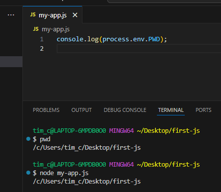
- Above you can see, the first terminal command pwd (print working directory) is done using bash script, but the second command runs the file using Node.js
- Node.js has many built-in objects for interacting with the file directory, the users system. In this case, the above script prints the script using process.env.PWD instead of pwd. Its syntax for navigating the directory is different than Bash.
-
If you type node, you will enter the read-evaluate-print loop, such as you would see in a browser. The .help screen is pretty useful:
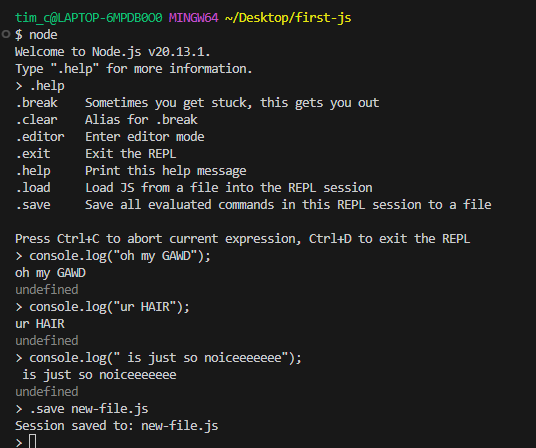
- Here, I used the read-evaluate-print loop to create several commands, and then save them into a file called new-file
Chapter 6
Javascript Syntax: Arrays
- Arrays are dynamic. They can store any data type or any mix of data types
- Array size does not have to be declared, and new items can be added at any time
- Arrays are allocated on the heap.
-
Here's how to create an array and access elements:
let myArr = ["element1", 2, "element3"];
console.log(myArr); /* outputs contents of array: ['element1', 2, 'element3'] */
console.log(myArr[0]); /* outputs: "element1" */ - Note that array indexes start at 0
-
You can access certain characters from strings the same way as array indexes:
let myStr = "watermelon"
console.log(myStr[5]) /* outputs: m */ - Note though that strings are not arrays. They are immutable (can't be directly changed) primitive data types, whereas arrays are objects mutable with their own separate set of built-in methods
-
You can change strings indirectly however, with concatenation and slice:
let myStr = "Cat"
myStr = "H" + myStr.slice(1);
console.log(myStr); /* outputs: Hat */ - To access the last element in an array, you can use array[array.length-1]
- When an array is declared const, you can't reassign it. But the actual elements inside are still mutable.
- array.push() will add an element to the end of an array
- array.pop() will remove and return the last element
- array.shift() will remove and return the first element
- array.unshift() will add an element to the beginning of the array
- array.slice(3, 5) will return a two element slice at index 3 and index 4. The original array does not change.
- array.indexOf('pizza') will return the first index holding 'pizza'
- array.splice(2, 2, 'ocean') will delete elements 2 and 3 and replace them with with 'ocean'
- array.join(' ') will concatenate all elements of an array together into a string, separated by whatever you place in the parentheses (a space in this case)
- The best method for inserting an object into an array is to use array.splice(index, 0, object). In this case, zero means nothing will be deleted.
-
Arrays are passed by reference by default to functions, and because they have automatic garbage collection, you don't need to worry about memory allocation or dangling references:
let clients = ['Tom', 'Harry', 'Shanon']
function addClient(client){clients.push(client); }
addClient('Debra');
console.log(clients) /* outputs: ['Tom', 'Harry', 'Shanon', 'Debra'] */ -
Primitive data types are passed by value though. But arrays are passed by reference. Here's the important distinction:
let val1 = 'fire';
let val2 = val1;
val1 = 'water';
console.log(val1); /* outputs: water */
console.log(val2); /* outputs: fire */
let elementsArr = ['fire'];
let ref1 = elementsArr;
let ref2 = ref1;
ref1[0] = 'water';
console.log(elementsArr) /* outputs: ['water'] */
console.log(ref1); /* outputs: ['water'] */
console.log(ref2); /* outputs: ['water'] */ -
You can also nest arrays to make multi-dimensional arrays:
let numberClusters = [[1, 2], [3, 4], [5, 6]];
const target = numberClusters[2][1];
console.log(target); /* outputs: 6 */
let wtf = ['I', [1, ['a', 'b']], 'II']; /* 3 dimensional array */
console.log(wtf[1][1][1]); /* outputs: b */ -
Spread syntax is a way of expanding arrays im places where multiple arguments can be accepted. This can also be done with anything iterable (i.e. objects and strings):
const letters = ['H', 'e', 'l', 'l', 'o', ' ', 'E', 'a', 'r', 'l']; function concat(arg){ arg.reduce((acc, curr) => acc + curr); } concat(letters); - When you leave off array [] syntax or object {} syntax, Javascript interprets it as a sequence of arguments to a function, rather than an array or object. If a function only takes a single argument, it will throw an error.
Chapter 7
Javascript Syntax: Loops
-
Nothing really unique here. Here's how to do a for loop:
for (let i = 0; i < 10; i++){console.log(i);
} -
Here's a while loop:
let i = 0
while (true) {if (!(i < 5)){break; }
i++;
console.log(i);
} -
Here's a do... while loop:
let watsup = 'hello';
do {console.log(watsup);
watsup = 'goodbye';
} while (watsup === 'hello');
console.log(watsup);
Chapter 8
Javascript Syntax: Objects
-
Javascript allows you to create objects without classes. They're set up in key-value pairs:
let myObject = {'property1': 'wet',
property2: 500,
property3: ''
};
console.log(myObject.property1);/* outputs: wet */
console.log(myObject['property1']); /* also prints wet */
console.log(myObject.'property1'); /* invalid, no quotes are used with dot operator */ -
You can also change or add or get rid of properties:
let order1 = {icecream: 'vanilla',
topping: 'fudge',
extras: 'sprinkles',
'banana?': true
};
order1.cone = 'waffle' /* adds cone as a property */
order1.topping = 'caramel' /* changes topping to caramel */
order1['banana?'] = false /* always use [ ] brackets for invalid identifiers (i.e. the '?') */
order1['extras'] = 'oreos' /* bracket notation is also acceptable here, but not required */
delete order1.extras; /* order1 no longer has oreos via the delete keyword */
console.log(order1);
/* outputs: icecream: 'vanilla', topping: 'caramel', 'banana?': false, cone: 'waffel' */ -
You can also declare methods to objects (still delineated by commas). There are two accepted syntaxes for this:
let calculator = {add: function (a, b) { return a+b; }, /* syntax 1 */subtract: function (a, b) { return a-b; }, /* syntax 1 */multiply (a, b) {return a*b; }, /* syntax 2 (newer shorthand) */divide (a, b) {return a/b; } /* syntax 2 (newer shorthand) */};
let result = calculator.multiply(6, 8);
console.log(result); /* outputs: 48 */ -
You should default to the shorthand method declaration, where multiply and divide as above are implicitly key names. In the following example, Object.keys() will return both
functions as valid keys, but the first is preferred:
const fancyName = {
giveFancyName(name){const newName = name + 'genburgermenson';
console.log(newName);
},
giveFancyNickName: function(name){ /* works, but regular method declaration is simpler */const nickName = name.match('([^aeiouy]*[aeiuoy]*[^aeiouy])'); /* returns a Regex match array */console.log(nickName[0]);
}
}
console.log(Object.keys(fancyName)) - You should always use brackets for keys with invalid identifiers (special characters), but also for keys that are dynamically created:
-
Be very careful to note the difference between functions when they're declared as standalone functions versus methods of an object:
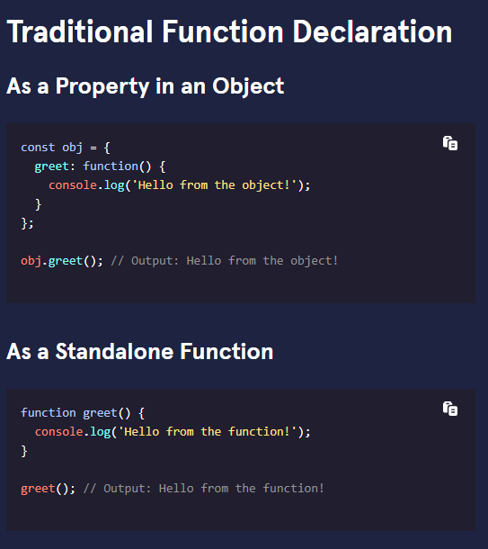 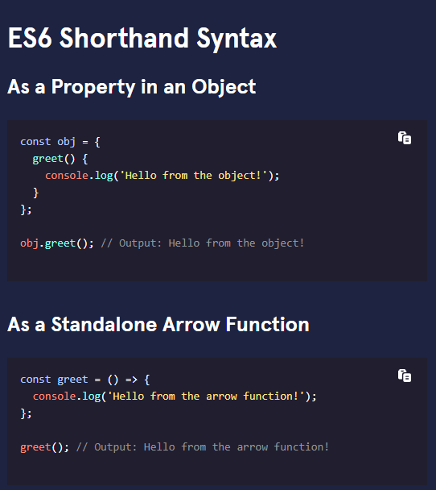
- That said, avoid shorthand syntax for methods. Shorthand has no this binding, making it useless for self-reference.
- Object properties can also hold arrays
-
You can also nest objects within other objects:
let applianceList = {kitchen: { appliances: ['oven', 'dishwasher', 'toaster'] }, /* array within property appliances */'living room': { appliances: ['TV', 'stereo player'] },bedroom: { appliances: ['alarm clock', 'computer'] }};
console.log(applianceList['living room'].appliances[0]); /* outputs: 'TV' */ -
Objects can be anonymous inside of arrays because they have an index value:
let employees = [{name: 'John', salary: 90000},{name: 'Sally', salary: 130000}];
if (employees[0].salary > employees[1].salary)console.log(employees[0].name);
elseconsole.log(employees[1].name); /* outputs: 'Sally' */ - Using a const keyword for an object will not allow you to reassign an object using brackets, but you will still be able to edit its properties and methods.
-
Objects are passed by reference to functions. You may edit their properties, but reassigning only reassigns the parameter reference to a new memory space, unbinding it from its original reference location:
let vehicle = { name: 'Toyota'};
let changeName = obj => { obj.name = 'Subaru'; };
let reassign = obj => { obj = { species: 'Platypus'}; }
/* reassignment within local function scope unbinds obj from the vehicle object memory location
but vehicle will still be at its original memory */
changeName(vehicle);
console.log(vehicle); /* outputs: name: 'Subaru' */
reassign(vehicle);
console.log(vehicle); /* outputs: name: 'Subaru' */ -
The for... in loop allows us to iterate through object properties. The iterator typeof is string:
let houseListing = {price: 560000,
'sq. feet': 1600,
layout: { /* Nested object */floors: 2,
bedrooms: 3,
bathrooms: 2,
'living rooms': 2,
kitchens: 1 }
}
for (let room in houseListing.layout) {console.log(`${room}: ${houseListing.layout[room]}`);}
/* Notice the difference between ${room} and the chained [room].
${room} is the string belonging to the room iterator. I.e. the key name.
But the chained [room] operator gives you the corresponding value instead. */
/* Outputs: floors: 2, bedrooms: 3, bathrooms: 2, living rooms: 2, kitchens: 1 */
This
-
This in Javascript isn't really defined the same way as it is in other languages. In C++, for instance, this
can only be used within classes. So, it always points to the object instance of the class where it is used. However, in Javascript, this is much
more dynamic. It may be used in the global context, where it'll point to the global object. Typically though, it points to whatever object calls it:
function myFunc(){return this;
}
console.log(myFunc());/* outputs the global object */
let myObj = {color: 'red' }
/* There's currently no way to refer to myObj itself. So we need to add a method function. */
myObj.selfRefer = myFunc; /* Assigns a reference to myFunc. */
/* So now the object definition looks like:
myObj = {color: 'red',selfRefer = myFunc (Here, myFunc is in the "context" of myObj!!)} */
console.log(myObj.selfRefer()); /* outputs myObj with all its properties */ -
Scope and context are two different things. Scope is defined by functions and their nested blocks, and therefore determines variable access.
Context refers to the object environment where the function is executed. So for instance, all functions in the global namespace are executed within the global context.
I.e. they are executed within the global object. But methods can be executed within other objects. Consider an object carWash. carWash may have a method applySoap. When
carWash.applySoap() is called, applySoap() is executed within the context of carWash. Another object may borrow this method though! washingMachine may want to use this same method.
Instead of rewriting the method, it can just borrow applySoap from washingMachine:
let carWash = {soapType: 'Armor All ',
applySoap: function(){console.log(this.soapType + ' was applied'); }
}
let washingMachine = {soapType: 'Tide',
addDetergent: carWash.applySoap
}
washingMachine.addDetergent(); /* outputs tide, because the context of this is where the function applySoap is executed, not where it is defined. */ - So the TLDR is, this refers to the object context where the function is invoked
- The value of this depends on how a function is invoked, not how it is defined
- If it's not attached to an object, it refers to the global object
- Arrow syntax has NO this binding. It's basically useless with this because it will always refer to the global objects unless it's within a scope that already has this defined
-
This can only be defined by traditional functions.
let obj1 = {uselessFunc: () => this /* No defined this binding. This points to the global object. */}
let obj2 = {tradFun: function(){ /* This is already defined with traditional syntax, */return () => this /* so nested arrowFunctions inherit the value of this */}
}
Other Critical Implementation Details
-
Returning functions only returns a reference to a function. It does not execute the returned function's body:
function myFunc(){return cheeseFunc = () => { /* Returns a function reference 'cheeseFunc' */console.log('cheese');}
}
console.log(myFunc()); /* Outputs: Function cheeseFunc */
console.log(myFunc()()); /* Outputs: cheese. Effectively, cheeseFunc() */ - Context: The value of this within a function, determined by how (arrow vs. traditional syntax) and where (which object called it) it's invoked
- Context is really only a conceptual paradigm for the value of this. You can't really see "context." It has no further Javascript implications beyond determining the value of this
- this: A keyword which refers to the object where it is invoked
- Scope: The accessibility of variables or functions within the code, determined by where they are declared
- Arrow functions have no automatic this binding. Meaning, this will inherit its value.
- Traditional functions have an automatic this binding. Meaning, this will refer to the object which calls them.
-
Arrow functions nested in a traditional function will inherit the traditional function’s value of this. If not nested within a traditional function, they will inherit this from the global context.
let obj1 = {uselessFunc: () => this /* No defined this binding. This points to the global object. */}
let obj2 = {tradFunc: function(){ /* This is already defined with traditional syntax, */return () => this /* so nested arrowFunctions inherit the value of this */},
proof: 'This is an obj2 String'
}
console.log(obj1.uselessFunc()); /* Prints undefined in strict mode */
console.log(obj2.tradFunc()()); /* Prints obj2 definition. Note the double parentheses. They're needed because tradFunc returns a function reference, it needs to be executed also */ - const really doesn't mean const. It actually just means it can't be redeclared.
- typeof is an operator. No parentheses are needed to use it. It returns a string, so remember to use quotes if checking for equality
- Functions are objects.
- Functions can have properties
- Functions can have variables
- Objects can NOT have variables (as opposed to C++, where objects consist of member variables and member functions)
- Objects are ALWAYS collections of key-value pairs.
-
The 2 main differences then, between functions and objects, is that
1. Functions are executed, while objects are not.
2. Functions can contain variables, but objects can not. -
Because functions are objects, we can imagine under the hood they may look something like this:
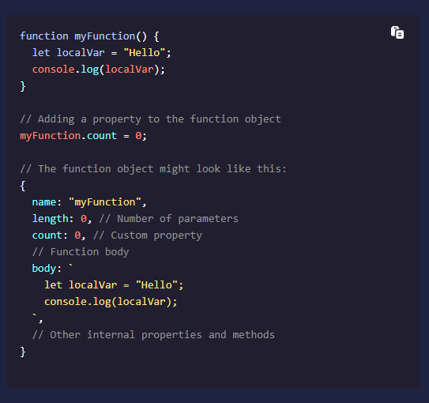
- Functions can be created dynamically, or reassigned at any point
- In a statically-typed language, functions must be known at run time. However, function pointers allow for changes in code direction for flexibility.
More On Creating Objects
- Note that in statically-typed languages, you can't add or remove object properties because the type and size must be known at compile time
- Javascript is dynamically-typed though, which means the object type can be created and can change at any point
- So, in C++, the structure of objects must be defined by the blueprint provided by classes/structs
- In Javascript, type size doesn't need to be known, so you can create an object out of thin air, using object literals
-
Prior to ES6, there were no "classes." So objects were created using the following methods:
1. Object Literals - Defines the object's properties and methods on the spot
2. Factory Functions - Create and return an object directly based on given parameters
3. Constructors - Populate an object that has already been created via the new keyword -
Here's an example of an object literal:
let restaurant = { /* Literally creates a restaurant called Pizza Heaven */name: 'Pizza Heaven',
printLogo: () => console.log('Pizza made by God')} -
Below is an example of a factory function. When brickOven() is called, it will create and return a type of pizza object based on the parameters. In this case, all the pizzas have the same number of properties.
But a factory function can create many different kinds of objects based on the parameter input.
function brickOven(name, temperature) {if (temperature > 900){return {pizzaType: name,
status: 'burned!'
}
}
if (temperature < 200){return {pizzaType: name,
status: 'cold'
}
}
return {pizzaType: name,
status: 'perfectly crispy'
}
}
order1 = brickOven("cheese pizza", 1000);
order2 = brickOven("meat pizza", 750);
console.log([order1, order2]); - Now for the constructor example. Constructors labels should always start with a capital letter.
-
With constructors, the object is created with the new keyword. Under the hood, new does many things but for now it basically creates the object.
The orderTemplate constructor is just there to populate the object with properties and values via this. It does not return an object:
function OrderTemplate(customerName, pizzaType){this.customerName = customerName;
this.pizzaType = pizzaType;
switch (pizzaType) {case 'cheese pizza':
this.cost = 12;
break;
case 'meat pizza':
this.cost = 16;
break;
case 'hawaiian pizza':
this.cost = 18;
break;
default:
this.cost = 30;
break;
}
}
let order1 = new orderTemplate('Jimmy', 'meat pizza');
console.log(order1); - In practice, the only thing different about constructors and regular functions is constructors are constructors because they're called with the new keyword. Without new, they act as regular functions.
-
ES6 introduced a shorthand for creating objects within Factory functions:
/* Instead of this: */
function carFactory(model, cost, color){return {model: model,
cost: cost,
color: color
}
}
/* Use the new shorthand: */
function carFactory(model, cost, color){return {model,
cost,
color
}
} - There's another useful shorthand syntax, which is for retrieving object property values, called destructured assignment.
-
Here's how to implement the destructured assignment shorthand:
let boat{name = 'Black Pearl'
boatType = 'Pirate Ship',
captain = 'Jack Sparrow'
crewSize = 36
}
/* let crewSize = boat.crewSize; would be the normal way to do this */
let { crewSize } = boat; /* shorthand using the object boats key, crewsize */ - Don't forget, the Object class also has its own static methods, such as Object.freeze(yourObj), or Object.keys(yourObj). And it has instance methods as well, such as .hasOwnProperty()
Closure
- In Javascript, when you return anyFunction, you're returning a reference (not a copy) to wherever anyFunction is
- You're allowed to return nested functions, this can create what is called a closure
- Closure: A concept where a function retains access to it's lexical scope, even when the function is executed outside of that scope
- Closures remember all variables from the scope in which it was created, even after the scope has exited.
- In C++, if you tried to return a function reference (if it were possible), the reference would be dangling when executed, and any variables from the lexical scope it was defined would be dangling
- Lexical: the physical structure and placement of code that you can visually see
-
Here's a demo of the concept of closure:
function outerFunc(){let num = 4; /* num is not accessible outside of outerFunc() */function innerFunc(){ /* inner function declaration */console.log(num); /* innerFunc() however remembers its scope when called */}
return innerFunc; /* this is a reference to the inner function */}
let myNum = outerFunc(); /* runs outerFunc and stores the reference to innerFunc */
myNum(); /* innerFunc is run, outputs: 4 */ - When myNum() is run, it contains a reference to innerFunc. innerFunc remembers it's lexical scope (it's physical placement within the code) and all of the variables that it had access to, and is able to produce the result 4.
Access Functions
- Prior to ES6, there were no "public:" or "private:" access specifiers like there were in other languages
-
In order to create private variables, you would do this through function block scope closure:
function CreateEmployee(name, salary, ssn){let _name = name;
/* the constructor holds the private values, */let _salary = salary;
let _ssn = ssn;
this.setName = function(name){ _name = name; }this.setSalary = function(salary){ _salary = salary; }this.setSSN = function(ssn){ _ssn = ssn; }this.getName = function(){ return _name; }this.getSalary = function(){ return `$${_salary.toLocaleString()}`; } /* adds commas to salaries */this.getSSN = function(){ return _ssn; }}
const employees = [new CreateEmployee('Jim', 152000, `#${739572057}`), new CreateEmployee('Bernard', 75000, `#${395728436}`)];
/* employees are created in an array, with each index using the new keyword and constructor.*/
console.log(employees[0].getSalary()) /* Outputs: $152,000. The value of Jim's salary. */ -
Factory functions can also use closure to hide private variables:
function person(name, age){_age = age; /* _age is only accessible in the constructor scope */_name = name; /* _name is only accessible in the constructor scope */return {setName: function (name){ _name = name ; }, /* return an object with get/set methods */setAge: function (age){ _age = age; }, /* remember not to forget your commas! */getName: function (){ return _name; },getAge: function (){ return _age; }}
}
console.log(person('Brianna', 42).getName()) /* Outputs: Brianna */
/* notice how you can chain .getName() because the factory function returns the object itself */ -
Post ES5, rather than using getName() and setName() as a method names, you can use get and set:
function carFactory(model, color, price){_model = model;
_color = color;
_price = price;
return {get model(){ return _model; }, // Note that "this" is not used hereget color(){ return _color; }, // _model, _color, _price belong to the function,get price(){ return _price; }, // not the returned objectset model(model){ _model = model; },set color(color){ _color = color; },set price(price){ _price = price; }}
}
let myCar = carFactory('Highlander', 'white', 45999);
console.log(myCar.model) /* notice how this looks like you're just logging a property */
myCar.color = "black"; /* no parentheses are used in this syntax */
console.log(myCar.color); /* outputs: black */ - Notice that calling getters/setters visually appears like you're viewing or changing a property, eliminating any need for parentheses or function calls on an object instance.
- Note that object literals cannot hold variables, only properties
-
Also note that object literals can't provide scope (i.e. they can't hide properties). If they did, accessing/modifying/adding/removing properties wouldn't be possible, which ruins the point for dynamic objects.
Therefore, by default, properties are public. If you want to make their values private, you'd have to employ function scope to hide them. But, getting/setting (which must be public methods) wouldn't have
access to those privately made properties. Therefore, object literals can't contain accessible private variables:
let objLiteral = {giveName: function(name){ /* Employs function scope to hide variable _name */let _name = name;
},
get name(){ return _name ; }/* _name is not in scope */}
objLiteral.giveName('Charlie');
console.log(objLiteral.name); /* prints undefined */ -
And this doesn't actually create private variables:
let objLiteral = {_age: 56, /* publicly accessible */get age(){ return this._age; },set age(age){ this._age = age; }}
console.log(objLiteral.age); /* contains a reference to the age() function, and prints 56 */
objLiteral.age = 'IAMAHACKERHAHAHA!!'; /* the property is public, so anyone can change it */ console.log(objLiteral.age); /* outputs: IAMAHACKERHAHAHA!! */ -
Given all of these problems, ES6 introduced the # and classes which will create private fields:
class mailingInfo {#myAddress = '52 Blueberry Lane';
get address(){ return this.#myAddress; }set address(address){ this.#myAddress = address; }}
const John = new mailingInfo();
console.log(John.address); /* outputs: 52 Blueberry Lane */
Chapter 9
Higher Order Functions & Callbacks
- Higher order functions: Functions that accept other functions as parameters and/or return functions as output.
-
When a function reference is assigned to a variable, the variable and function reference point to the same address
let firstFunc = () => 2+2;
secondFunc = firstFunc; /* secondFunc now points to the same address as firstFunc */
console.log(secondFunc === firstFunc); /* This prints true */
console.log(secondFunc()); /* outputs: 4 */ - All Javascript objects are "first-class." This includes functions. "First-class" means they can be assigned to variables, and used as parameters or return values in functions. This is not the case in many languages. For instance, in C++, you can't pass arguments as parameters or return values in a function.
- A higher-order functionis a function that accepts functions as parameters and/or returns functions.
- Higher-order functions greatly expand the options for control flow, enabling more flexible and dynamic execution paths.
- A callback function a function is passed in as a parameter to a higher-order function
- To create a callback function, pass it without the execution parentheses. Otherwise, it will just pass in the return result.
-
Here's a very simple callback function example:
function callback1(name){return ('My name is ' + name);}
function callback2(name){return (name + 'is my DAWG');
}
function higherOrder(func, name){ /* func is passed by reference as an argument */console.log(func(name)); /* func is executed */}
higherOrder(callback1, 'Jeff'); /* outputs: 'My name is Jeff' */ -
Now imagine there were 100 callbacks options listed in an array. You could use a higherOrder function to execute these in a while loop. Normally you'd have to list out all 100!
But what if you didn't always want it to be in sequential order? With a higherOrder function, you could simply iterate through index numbers in any order without having to list callbacks manually:
let callbackArray = [ /* super large list of callback functions */(name)=>'Hi, ' + name,
(name)=>'Hello, ' + name,
(name)=>'Greetings, ' + name,
(name)=>'Good day, ' + name,
(name)=>'Hola, ' + name,
(name)=>'Sup, ' + name,
(name)=>'Suhhh, ' + name,
(name)=>'Wadddup ' + name,
(name)=>'Skrrt skrtt ' + name,
(name)=>'Dolla dolla ' + name,
(name)=>'Ay ' + name,
(name)=>'Oi, ' + name,
(name)=>'MEH ' + name,
(name)=>'Ello, ' + name,
(name)=>'How goes it, ' + name,
(name)=>'Wyd ' + name,
(name)=>'My DAWG ' + name,
(name)=>'Mi hoy minoy, ' + name,
(name)=>'What\'s good, ' + name,
(name)=>'Bartledoo, '
]
function calcSkip(length){ /* creates a periodic wave shape of iterating through the array */if(typeof calcSkip.skip === 'undefined'){calcSkip.skip = 0;
}
if(calcSkip.skip === 0)
calcSkip.direction = 'forward';
if(calcSkip.skip === length)
calcSkip.direction = 'backward';
if(calcSkip.direction === 'forward')
return ++calcSkip.skip;
else
return --calcSkip.skip;
}
function calcIndex(length){ /* calculates the index based on the complicated iterator above */if(typeof calcIndex.index === 'undefined'){calcIndex.index = 1;
return calcIndex.index - 1;
} else {calcIndex.index += calcSkip(length);
}
if (calcIndex.index > length)
calcIndex.index %= length;
return calcIndex.index - 1;
}
function greetPerson(index, greeting, person){ /* Higher order function acting as a callback hub */return(' === ' + (index+1) + '. ' + greeting(person));}
for(let i = 0; i < 1000; i++){ /* Calls the higher order function with the calculated index */index = calcIndex(callbackArray.length);
console.log('GREETING' + (i+1) + greetPerson(index, callbackArray[index], 'Frank'));} - It's a trivial example really, but demonstrates how nearly impossible this could've been with a large list of complicated callback functions. Every function in the callback array would've had to have been called and executed, which, wouldn't have been possible to do in a such a periodic fashion.
-
Here's another example of a callback, where a higher order function forms as a hub for multiple callback options:
function mult(){ /* Used to encapsulate a callNumber variable */let callNumber = 1;
function innerCalc(){callNumber *= 2;
return callNumber;
}
innerCalc.reset = () => callNumber = 1; /* innerCalc is an object, so we can add a method to it */return innerCalc; /* innerCalc is returned as a reference, just waiting to be executed */}
function div(){let callNumber = 2;
function innerCalc(){callNumber /= 2;
return callNumber;
}
innerCalc.reset = () => callNumber = 2;
return innerCalc;
}
grow = mult();/* grow now references its innerCalc */
shrink = div();
/* shrink now references its innerCalc */ function makeArray(intervalType, length){myArray = []
for(let i = 0; i < length; i++){myArray.push(intervalType());/* Either grow or shrink will be called and executed () here */}
return myArray;
}
console.log(makeArray(grow, 10));
grow.reset(); /* innerCalc resets outer callNumber to 1 */
console.log(makeArray(grow, 10));
Iterators
-
.forEach() is a method for all arrays. The built-in method will iterate through each element in an array, and apply whatever function you'd like:
let numArray = [0, 1, 2, 3]
numArray.forEach((num)=>console.log(num*num)) /* outputs: 0, 1, 4, 9 */ -
.map() is the same thing, but it returns an array. You'll need to store this array to save it's output as a useable map:
let flavorArr = ['Meatball', 'Ham', 'Chicken'];
let soups = flavorArr.map((type) => type + ' Soup');
let pizzas = flavorArr.map((type) => type + ' Pizza');
let sandwiches = flavorArr.map((type) => type + ' Sandwich');
console.log(soups);
console.log(pizzas);
console.log(sandwiches);
/* outputs all the flavor types in the soups, pizzas, and sandwiches arrays */ -
.filter() is similar to .map(), but the callback needs to return true or false. If the condition is met, the element is added to the new array
let words = ['banana', 'cat', 'baseball', 'sun', 'tropical', 'tent'];
const newArray = words.filter((word)=>word.length < 5);
console.log(newArray);/* outputs: ['cat', 'sun', 'tent'] */ -
.findIndex() will return the index of the first element meets the condition. This should be stored in a variable:
let strings = ['hi', 'there', 'this', 'is', 'an', 'array'];
const startsWithTH = strings.findIndex((str) => str.slice(0, 2) === 'th');
console.log(startsWithTH); /* outputs: 1 */
/* Note how this doesn't pick up index 2, 'this'. findIndex() stops after the first true evaluation. */ -
.reduce() iterates through an array and calculates a total or concatenates strings. An accumulator can provide the running total of the array at each index.
let letters = ['A', 'B', 'C', 'D', 'E', 'F', 'G']const concatLetters = letters.reduce(function(accumulator, currentVal){console.log(accumulator); /* adds a new letter each time */return accumulator + currentVal;
})
console.log(concatLetters); /* outputs: ABCDEFG */
console.log(typeof concatLetters); /* Note that this is a string this time, not an array */ - When looking for array iterators, you can find them under the "Instance Methods" section on MDN, because they act upon the array object instance
-
.every() will return a boolean value of whether or not every element met the criteria
let arr = [2, 4, 6, 8]
console.log(arr.every((num)=> num % 2 === 0 ))/* outputs: True */
- Choosing an iterator often comes down to what it returns, whether it returns a new array, a value, a boolean, etc.
-
Note that .forEach() automatically passes arguments to callback functions. It passes the current element iteration, then passes the index number as a second argument if
the callback has 2 parameters, and then will pass the array itself if it has 3 parameters. If a callback has 4+ parameters, forEach will still call the callback function for each element,
but those additional parameters will be undefined:
function callback(first, second, third, fourth){console.log(first + " is at " + second + " index in array: " + third + ". " + fourth);
}
let myArr = ['cat', 'dog', 'fish'];
myArr.forEach(callback);
/* outputs:
cat is at 0 index in array: cat,dog,fish. undefined
dog is at 1 index in array: cat,dog,fish. undefined
fish is at 2 index in array: cat,dog,fish. undefined */ -
.sort() will sort through an array based on a given function. If the function returns positive, it will [b, a]. If the function returns negative, [a, b]. If the function returns 0, it will keep
the original order of a and b:
let num = [1, 2, 4, 3]
num.sort((a, b) => a < b ? -1 : 1) /* No copy is made by .sort(), num is sorted in place */
/* Alphabetically 'a' is less than 'b'. So, is 'a' less than 'b'? Don't sort. Else sort. */
console.log(num) /* outputs [1, 2, 3, 4] */ -
.includes() will return true or false if an array contains a specified value:
let arr = ['jellyfish', 'starfish', 'goldfish', 'shark']
if (arr.includes('shark')) /* Evaluates true */console.log('Fish are friends not food!')
Errors and Debugging
-
An error stack trace contains:
1. The file where the error occured
2. The line (and sometimes character) where the error occurred
3. The type of error thrown (typically reference, syntax, or type errors)
4. A description of the error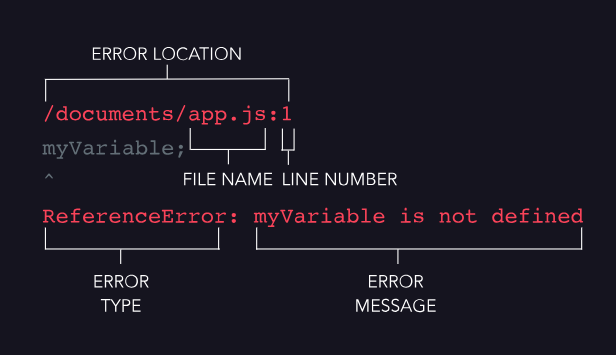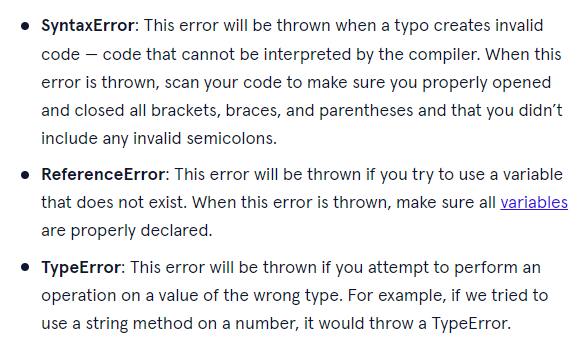
Chapter 10
The Script Element
- You can use a script tag with the script directly inside the HTML file. But it's better to instead to use src='./fileName.js' as an attribute and keep a separation of concerns
- Even if your linking the script file, you'll still need to add a closing script tag
- Because HTML parsers render elements in the order they appear, a heavy script could delay subsequent HTML elements from being rendered quickly, resulting in poor user experience
- If scripts are stacked on top of each other, they should be ordered by position of dependecy
-
Use a defer attribute if you want the HTML parser to render the entire HTML file before loading the script:
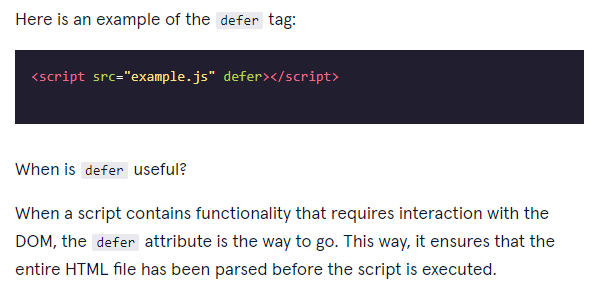
-
The async attribute allows the parser to download the script while rendering the HTML file. The script will execute when downloaded, irrespective of when the HTML file renders:
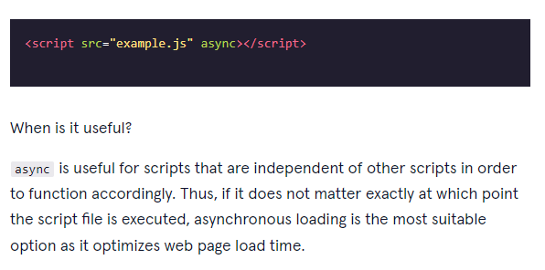
The DOM
- The DOM is a tree-like model that organizes the HTML document as an object
- The DOM is implemented by browsers as the link between HTML and scripting languages. It is an API.
- The DOM is not Javascript per se, but Javascript has the ability to interact with it.
- The DOM is the only way to interact with the structure of web pages, and Javascript is the only language that can natively interact with it. Other languages need to compile to Javascript if they want to interact with a web page.
- When the browser loads an HTML file, it constructs the DOM. The DOM has a bunch of object properties and methods for interacting with it.
- Nodes are HTML elements, or their inside text, or a HTML comment node.
- Text nodes are the actual HTML text inside elements
- The DOM allows access to each element's attributes such as id, style, class, etc.
- Follow the tree like structure to access elements, such as document.body
-
.innerHTML allows you to change the contents of any element, such as
/* document.body.p.innerHTML = 'text'; --> incorrect, .body doesn't have a direct p property */
document.querySelector('p').innerHTML = 'text'; /* correct */ -
In this sense you can actually add new HTML code like so:
document.body.innerHTML = '<h1>Just ruined your whole webpage</h1>' - Note that document.body doesn't have element properties past this point. This is because not all websites are structured the same. To traverse into deeper nodes, you have to use .querySelector or .getElement methods
- .querySelector() is a method for specifying CSS selectors. But it only returns the FIRST element of the type.
- .querySelectorAll() is a CSS style selector that returns a NodeList (a container similar to an array)
- .getElementByID() is another method, allowing ID specification to get an element
- .getElementsByClassName() will return a NodeList of all elements with a specified class
-
.getElementsByTagName() will return a NodeList of all elements with the specified tag
/* Return a node with: */
document.querySelector('p').innerHTML = 'This is the first p';/* note, this is a CSS selector */
/* Return an HTML element with: */
document.getElementById('awesome').innerHTML = 'This is an ID called awesome';
/* Return a NodeList node with: */
document.querySelectorAll('p')[5].style.color = 'blue'
/* Return an HTMLCollection element with:
document.getElementsByClassName('blue')[0].innerHTML = 'This is the first element with blue class';
document.getElementsByTagName('li')[0].innerHTML = 'This is the first element with the list tag';
- If a forEach method is needed, use .querySelectorAll because it returns a NodeList which has forEach
- Note that document.body doesn't contain a .getElementById() method, only the document object does, because there an ID can only belong to a single element in the whole document, so there's no reason to specify .body
- The .parentNode returns the parent of the specified element
- The .children returns an array of all the child elements
- .parentNode will return null on the document element, which is the root node
- .children will return null on any element which doesn't have children
-
You can save any element within a variable, such as:
let top = document.querySelector('h1');
top.innerHTML = 'NEW TITLE! HAHAA!'; -
If you want to change every type of a particular node, such as all h2's, you'll have to use a NodeList selector, and iterate over the list:
document.querySelectorAll('h2').forEach((node) => node.style.color = 'red') -
HTMLCollections do not have a for.each() method though. They will have to be converted to an array first before iteration:
Array.from(document.getElementsByTagName('h2')).forEach((el)=>el.style.color = 'red') - .createElement() is a method of the document object and can be used to create new elements. This does not append the element though. For that you need .appendChild(). These two often work together.
-
.appendChild() will attach the newly created element to whatever parent node you'd like:
let newHeader = document.createElement('h2');
newHeader.class = big;
newHeader.innerHTML = 'I AM SOME BIG TEXT';
document.querySelector('article').appendChild(newHeader); -
There are several other ways to place new HTML elements. Here's a complete list:
1. appendChild: parentElement.appendChild(newEl)
2. replaceChild: parentElement.replaceChild(newEl, oldEl)
3. insertBefore: parentElement.insertBefore(newEl, referenceElement)
4. innerHTML: parentElement.innerHTML = '<p>New element</p>'
5. insertAdjacentHTML: element.insertAdjacentHTML('beforebegin', '<p>new paragraph</p>')
6. insertAdjacentElement: parentElement.insertAdacentElement('beforebegin', newEl)
7. insertAdjacentText: parentElement.insertAdjacentText('beforebegin', 'new text')
8. prepend: parentElement.prepend(newEl)
9. append: parentElement.append(newEl) -
.removeChild() will remove any child of a parent node:
let para3 = document.querySelectorAll('p')[2];
para3.parentNode.removeChild(para3); -
You can also just set an HTMLelement's .hidden property to true if you want to hide, but not remove it completely:
document.getElementsByTagName('h2')[1].hidden = true; -
.onclick is an element property that can execute a function once a click event occurs on an element:
let myEl = document.getElementById('myButton');
myEl.onclick = () => myEl.style.backgroundColor = 'red';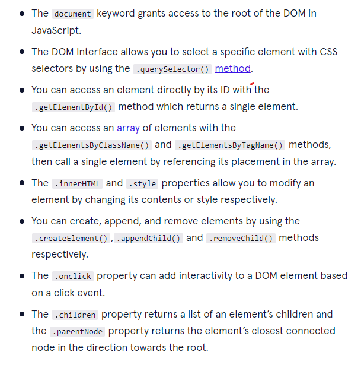
Chapter 11
EventTargets
-
The EventTarget interface is a set of methods implemented by many web API's, including the DOM, the Battery API, the AudioNode API, etc. Not all web API's implement the EventTarget interface.
However, those that do have the ability to:
1. Add event listeners
2. Remove event listeners
3. Dispatch events -
When an EventTarget object adds an "event listener", the listener is simply a key-value pair that ties a type of event (such as a mouse click, a keyboard press, resizing of a window) to a function.
This mechanism then executes a function when the event occurs. We can use .addEventListeners() to create this mechanism, or "event listener":
let firstLink = document.querySelector('a');
function grow(){ /* grow is an event handler. It "handles" the click event */
firstLink.style.fontSize = '50px';
}
firstLink.addEventListener('click', grow)/* When firstLink is clicked, it will grow in size */ -
We can also use the built in .onevent property of DOM elements to accomplish the same result as .addEventListener():
function blowStuffUp(){
bigRedButton.innerHTML = 'BOOM!';
}
let bigRedButton = document.getElementById('bigRedButton');
bigRedButton.onclick = blowStuffUp - Note however, that .onevent can only add one event handler, while .addEventListener() can add multiple event handlers.
-
When .addEventListener() or .onevent is added, the browser internally creates and updates a key-value list for each EventTarget, separately from the element itself.
This list isn't directly accessible. So internally it would look something like this:
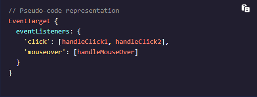
- Notice that one EventTarget can have many different types of events, tied to many different event handlers.
-
To remove event listeners (which is a key-value pair), we will need to specify the event/eventHandler pair:
const bigButton = document.querySelector('.big-button')
function small(){
bigButton.innerHTML = 'small';
}
function shy(){bigButton.innerHTML = 'im scurred';
}
bigButton.addEventListener('click', small);
bigButton.addEventListener('mouseover', shy); /* an EventTarget can have multiple event listeners */
bigButton.removeEventListener('click', small); /* We need to specify which event one */ - When an event occurs, an event object is created. This event object has relevant methods and properties to the event, such as Event.type, which returns the type of event it is, or Event.target, which returns the target to which the event was attached, or Event.timeStamp, which returns the exact time the event occured in milliseconds.
-
If you use event.Target, that is the HTML element itself. You can then chain .style or .innerHTML, or whatever you want to it:
const animalNoiseList = {
list: {},addAnimal: function (animal, noise){this.list[animal] = noise;
},
makeNoise: function (animal){return this.list[animal];
}
}
function makeAnimalButton(name, noise){const animal = document.createElement('button');animal.id = name;
animal.innerHTML = name;
animal.style.fontSize = '28px';
animal.style.color = 'blanchedalmond';
animal.style.backgroundColor = 'darkred';
animal.style.padding = '.25em';
animal.style.margin = '40px';
document.body.appendChild(animal);
animalNoiseList.addAnimal(name, noise);
return animal;
}
function makeNoise(event){console.log(event.target.id); /* event.target is the frog/cow element itself with 'click'. */event.target.innerHTML = animalNoiseList.makeNoise(event.target.id);
}
const frog = makeAnimalButton('frog', 'ribbit');
const cow = makeAnimalButton('cow', 'moo');
frog.addEventListener('click', makeNoise); /* changes frog button's innerHTML to ribbit */
cow.addEventListener('click', makeNoise); /* changes cow button's innerHTML to moo */ - There are many other events that can happen in a browser other than clicks. Mouse wheel, mouse dragging, CSS transitions (when they start or stop), text selection, DOM mutation, etc., are all events types. For a full list of event types, visit MDN's Event Reference.
-
If you ever need to have an event handler that also takes a parameter, you can't use function(event, parameter) as the callback
because it will execute immediately. Instead, use an anonymous function returning a function reference. This will add the argument you need without executing:
let firstHeading = document.createElement('h1');
firstHeading.style.fontSize = '2rem';
firstHeading.style.transition = 'font-size 250ms';
document.body.appendChild(firstHeading);
firstHeading.innerHTML = 'This is a tiny heading :(';
function larger(event, size){
event.target.style.fontSize = size;
event.target.innerHTML = 'NOW IT\'S A BIG HEADING! :D'
}
function smaller(event, size){
event.target.style.fontSize = size;
event.target.innerHTML = 'Now it\s tiny again :(';}
/* incorrect, larger and smaller would execute immediately:
firstHeading.addEventListener('mouseover', larger(event, '4rem'));
firstHeading.addEventListener('mouseover', smaller(event, '2rem')); */
/* correct, larger and smaller return a function reference */
firstHeading.addEventListener('mouseover', function callLarger(event){larger(event, '4rem')});
firstHeading.addEventListener('mouseout', function callSmaller(event){smaller(event, '2rem')});
/* Notice how both callback functions are named. Otherwise, we not not be able to remove the event listener later on. */ -
Above, mouseover and mouseup are additional mouse events referenced. Here's a list of all mentioned mouse events so far for consideration when creating
event listeners:
1. click
2. wheel
3. mousedown
4. mouseup
5. mouseover
6. mouseout -
And here are a bunch of keyboard events to consider:
1. keydown
2. keyup
3. keypress
Input Forms and Validation
- A regular expression is a sequence of characters representing a pattern. We can use that pattern to match strings, match parts of strings, confirm that a string conforms to pattern rules, or replace parts of strings with different characters.
- Client-side validation is the process of checking input fields for acceptable input patterns without the need for storage.
- The client is the process interacting with the server on behalf of the user. This is usually a web browser on the web.
- In client-side validation, the logic behind validation is included in the code that displays the form on the user's device. No interaction with the back-end is needed.
- Front-end validation is quick for the user, but Javascript can be turned off and malicious attacks can be made
- Back-end validation is the last defense for correct formatting, validation, and "sanitizing" the data so it is stored properly in a database
- Back-end validation also allows you to check for other validation rules, such as disallowing the registration of an email already being used
- Back-end validation also hides the code for validation, which makes malicious attacks harder to carry out since they can't see the rules
- Back-end machines are often much more powerful and can carry out more extensive validation methods
Chapter 12
Classes
-
Classes should always be labeled in PascalCase and should take on the form:
class Student{
constructor(name, age){this._name = name;
this._age = age;
}
} - The main difference between classes and object literals is classes have a constructor, and object literals are in the format of key:value pairs.
- An instance is an object of a particular class that has unique property values
-
To add an instance, use the keyword new and parentheses for initialization:
class Tenant{constructor(unit, name){this._unit = unit
this._name = name
}
}
const Jim = new Tenant(213, 'Jim');/* a single instance of a tenant */
let tenantArray = [Jim, new Tenant(214, 'Alfred'), new Tenant(215, 'Carly')];/* multiple instances */ - Be careful to use () and not {} for initialization. Curly braces are only used for object literals! But parentheses calls up the constructor function.
- With class methods, be careful not to include commas between as you would with object literals. Object literals is a list of key:value pairs which is separated by commas. A class acts more like a namespace or a template who's primary role is to structure code
-
Here's the format for making getters:
class Car{
constructor(year, model, make){this._year = year;
this._model = model;
this._make = make;
}
get year(){return this._year;
}
get model(){return this._model;
}
get make(){return this._make;
}
} -
You can start to see why it's important for using _ as a prefix for all properties (similar to the way m_ is used in C++ for member variables), because they're distinct from
local variables within a constructor or other methods. This does not make it private, though. For that, you would have to use # for private variables:
class Character{#name;
#strength;
#agility;
#hp;
constructor(name, strength, agility, hp){this.#name = name;
this.#strength = strength
this.#agility = agility;
this.#hp = hp;
}
getName(){return this.#name;
}
getStrength(){return this.#strength;
}
getAgility(){return this.#agility;
}
getHP(){return this.#hp;
}
}
const Player1 = new Character('Scorpion', 34, 15, 310);
console.log(Player1.getHP()); - With Javascript access specifiers, built-in getter functions do not work, because they're truly meant to be private class variables, where they cannot be changed or viewed outside of the class.
Inheritance
- Use the keyword extends to create a subclass (or derived class) that inherits from a Superclass (or base class).
-
In the constructor, the super() function will call the constructor of the base class to initialize derived class properties.
class Character{ /* base class */constructor(name){this._name = name;
}
get name(){return this._name;
}
}
class Ninja extends Character{ /* subclass inheriting from Character */constructor(name, weapon){super(name)
this._weapon = weapon;
}
attack(move){ /* notice how the function keyword is omitted for classes */console.log(super.name + ' attacked with ' + move + '!');
}
}
class Wizard extends Character{ /* subclass inheriting from Character */constructor(name, element){super(name);
this._element = element;
}
castSpell(spell){console.log(super.name + ' casted ' + spell + '!');
} /* use super.name for the base class property */}
const user1 = new Ninja('Saito', 'Katana')
const user2 = new Wizard('Eryndor', 'Fire');
user1.attack('bone break'); /* logs 'Saito attacked with bone break!'
user2.castSpell('mind control'); /* logs 'Eryndor casted mind control!' */
- In Javascript, the static keyword holds a different meaning than most programming languages. In C++, for instance, static would mean the variable or function is initialized once and exists throughout the lifetime of the program. But in Javascript, it has nothing to do with variable lifetime. It has to do with inheritance.
-
Use static if you want to disallow inheritance of any base class's methods. A method with static can be invoked on the base class directly, but not on any children or instances:
class Oven{constructor(temperature){this._temperature = temperature;
}
static getTypes(){ /* getTypes will need to be called directly on the base class, Oven */const types = ['KitchenOven', 'Toaster'];
return console.log(types);
}
}
class KitchenOven extends Oven{constructor(temperature, ovenLightOn){super(temperature);
this._ovenLightOn = ovenLightOn;
}
lightSetting(onOff){if (onOff === true || onOff === false){this._ovenLightOn = onOff;
console.log("Oven light is now " + (onOff ? "on" : "off") + '!');} else { console.log("Please select a valid setting."); }}
}
class Toaster extends Oven{constructor(temperature, toastTime){super(temperature)
this._toastTime = toastTime;
}
}
const roaster3000 = new KitchenOven(400, false);
Oven.getTypes(); /* Logs ['KitchenOven', 'Toaster'], useful for seeing all subclasses */
roaster3000.getTypes(); /* Throws an error, because getTypes() cannot be invoked on a KitchenOven */
const otherOven = Oven(2200);
ovenOven.getTypes() /* Also throws an error. getTypes() cannot be invoked on an INSTANCE either */ - Use window.getComputedStyle(element) when you want to see a style of an element that inherits a particular property, such as an inherited color
- Make an IntersectionObserver to see if an element is in the viewport. This is preferred over .getBoundingClientRect() because it's newer and not sluggish
Chapter 13
Asynchronous Javascript
- Asynchronous code is code that allows for multiple threads to be used at the same time. It allows a user to interact with a website without being blocked.
- Javascript is single-threaded, but the event-loop is able to employ concurrency
- Javascript really can only execute one task at a time, but the browser's event loop and WebAPI's make asynchronicity possible.
- In Browsers, Javascript code is executed on the stack. But most asynchronous operations, such as setTimeout() are handled by WebAPIs. Once the WebAPI runs these operations, it will push the remaining Javascript onto a callback queue. The event loop then makes sure nothing is on the stack, and finally pushes this queued Javascript onto the stack for it to be executed.
- A callback in an event listener is a type of asynchronous code. It is actively in a "wait" status until the event takes place. In the mean time, Javascript will continue to execute the top of the callstack.
- setTimeout(callback, 1000) will call a function after 1 second
- setInterval(callback, 1000) will repeatedly call a function every second
- A Promise object is an object that represents the outcome of an asynchronous operation. A promise object has three states: resolved (fulfilled), rejected , and pending. If is resolved or rejected, it is considered settled.
- A Promise takes an executor function, which will implement the resolve and reject functions within the Promise object. Those resolve and reject functions update the state and value of the Promise object.
- Under the hood, the Promise constructor function probably looks something like this: 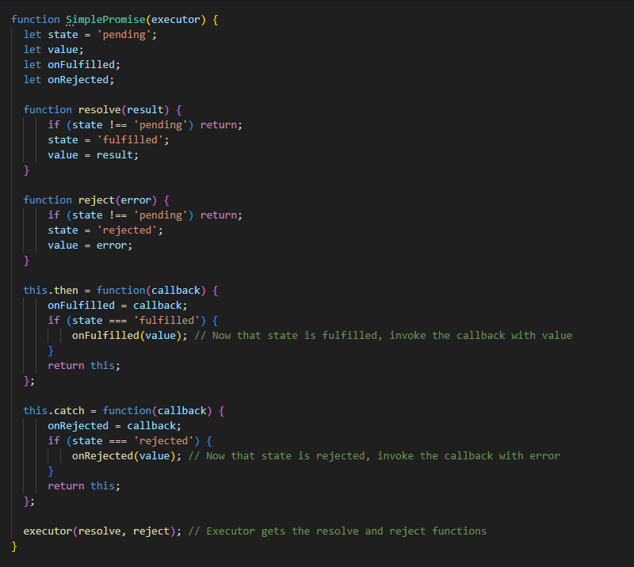
- It's super important to notice that the value of the resolved or rejected value can be any data type. It doesn't necessarily have to be just a string.
-
All you need to worry about though, is creating the new Promise object, passing it an executor function which takes in the resolve, reject functions, and executes either of those functions based on your own criteria:
let x = 0;
function count(resolve, reject){
start = Date.now()
while (Date.now()-start < 1000)
x++;
if (x > 10000000)
resolve(x + ' is greater than ten million')
else
reject(x + ' is less than ten million')
}
const overTenMillion = new Promise(count);
console.log(overTenMillion); /* will resolve or reject based on how fast it could increment x */ - In the above example, x will increment in a loop over 1 second. But due to CPU loads, system performance, etc., the promise may be resolved or rejected.
- If the promise is rejected, the program may terminate, as an unmanaged rejection is treated like an uncaught exception. To fix this, you need to include a .catch().
- Note however that the example above is still synchronous code. No asynchronous operations, such as setTimeout() occured.
- It's important to know that 'overTenMillion' above is assigned a Promise object. When it is logged, console.log() logs the Promise object itself.
- Therefore, a variable that is assigned to a Promise object can and will change at any point from a Promise { pending } to a Promise { state: resolved, value: 'reason' }.
.then(), .catch(), and Promise.all()
-
So how do we access the value of the promise once it resolves? If set a variable to a promise, the variable equals the promise object itself. But the promise object
can and will change:
let someVar = new Promise(resolve => setTimeout(() => resolve('resolved'), 1000));
console.log(someVar); /* Outputs a pending promise object */
setTimeout(()=>console.log(someVar), 1001); /* Outputs an object with a 'resolved' value */ - The problem is we have to wait for the variable to change as above. But even still, we don't want the promise object itself, we just want the resolved value.
-
The solution is the .then() function, which takes in the resolved value as a callback, such as:
new Promise(resolve => setTimeout(() => resolve('resolved'), 1000))
.then(resolvedValue => console.log(resolvedValue)); /* waits for the promise to be settled, and also takes in the resolved value as callback */ - This is the primary way of accessing the promises resolved or rejected values.
- .then() therefore, as a higher-order function, is invoked on a Promise and takes two callback functions: one for a resolved promise, and one for a rejected promise.
- If only 1 callback is provided for a .then() method, it will use the same callback for both states. If no callback is provided, it will do nothing.
- The .then() method callbacks are usually referred to as the "success handler function" or onFulfilled function, and the "failure handler function" or onRejected function.
- You can also use .then() and .catch() instead of 2 callbacks within .then(), to make cleaner code.
- Remember, both .then() and .catch() take in callbacks. The promise resolved or rejected value automatically passes it's value to the callback argument.
-
Here's a blueprint so far for creating Promises with success and failure handlers:
let toggle = true;
function executor(resolve, reject){
if (toggle === true)
resolve('Resolved.'); /* Promise's resolve method updates the Promise state and sets the value */else
reject('Rejected.'); /* Promise's reject method updates the Promise state and sets the value */}
function onFulfilled(val){ /* onFullfilled takes in the value of the Promise that invoked it */
console.log(val + ' WOOHOO!')
}
function onRejected(val){ /* onRejected takes in the value of the Promise that invoked it */
console.log(val + ' Damn...')
}
const firstPromise = new Promise(executor);
firstPromise.then(onFulfilled, onRejected); /* outputs: Resolved. WOOHOO! */
toggle = false; /* Changes the execution path within executor */
secondPromise = new Promise(executor);
secondPromise.then(onFulfilled, onRejected);/* outputs: Rejected. Damn... */
/* If we were to call .then(onFulfilled, onRejected) on firstPromise again, it would still print 'Resolved. WOOHOO!' - Note that if we were to call .then(onFulfilled, onRejected) on the firstPromise object again, it would still print 'Resolved. WOOHOO!'. Once a promise is settled, its value and state can no longer be changed. Again, by definition, a Promise represents the outcome of an asynchronous executor. If a Promise could change, it wouldn't be serving it's purpose appropriately.
- .then(onFullfilled) and .catch(onRejected) both return a new promise. If the returned promise is not explicitly specified, it's state will be resolved and value undefined.
-
To specify the returned promise from onFullfilled or onRejected handlers you can either:
1. return 'resolvedReason'
2. throw 'rejectedReason'
3. return Promise.resolve('resolvedReason')
4. return Promise.reject('rejectedReason')
5. return new Promise(executor) - In Javascript, composition refers to chaining multiple promises together. This is not the same as the object oriented design principle of composition.
- When returning values from a handler, try not to take on .then() or .catch() to the return line. Close off the handler first.
- Also don't forget to explicitly return a promise. Otherwise, the value of the returned promise will be undefined.
- Promise.all() is a great way of employing concurrency, multiple asynchronous operations happening together. Promise.all() accepts an array of promises and returns a single promise. If all promises in the array are successful, Promise.all() returns a resolved promise. If even one promise in the array fails, the Promise.all() returns rejected promise immediately.
- Under the hood, Promise.all() takes care of returning a new promise, so there's no need for the new keyword.
-
The value of Promise.all() will either be an array of all the fulfilled promise values, or a single rejection reason by the value of the promise that failed.

Async-Await
- With ES6, a cleaner promise syntax was created: async
- async is a keyword attached to an asynchronous function, and will return a promise by default.
-
Here're all the return values of async:
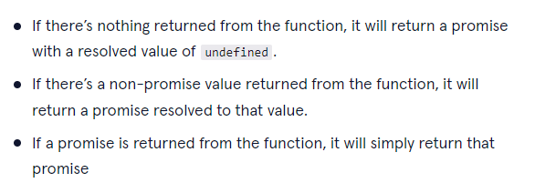
- async can also be chained with .then() and .catch()
- await can only be used within an function marked as async.
- await halts that functions execution until it receives a settled promise value.
- Async-await is a great tool for creating clean asynchronous code that is maintainable and easy to understand
-
try... catch statements are also easier for catching rejected promises. await will pass the rejected promise value to the error object:
function firstLetter(){
return new Promise(resolve => setTimeout(() => resolve('L'), 1000))}
function firstPhrase(ifYouWant){
return new Promise((resolve, reject)=>{if(ifYouWant === true)
setTimeout(()=> resolve('is for the way you look at me'), 1000)else
setTimeout(()=> reject('is for LOSER'), 1000);})
}
async function singASong(ifYouWant){
try{const lyric_1 = await firstLetter();
console.log(lyric_1);
const lyric_2 = await firstPhrase(ifYouWant);
console.log(lyric_2);
} catch(error){ /* a rejected promise from firstPhrase triggers the catch block */console.log(error); /* rejection value 'is for LOSER' is logged */}
}
singASong(false); - It's important to know that await changes the printing behavior of console.log(). With await, console.log() will print the value of the settled promise instead of the promise object itself.
-
Remember, a variable assigned to a Promise is assigned the promise object itself. But if anywhere else the await keyword is stated before the use of that variable, the execution of that line
will be halted until the promise is settled. Such as with console.log():
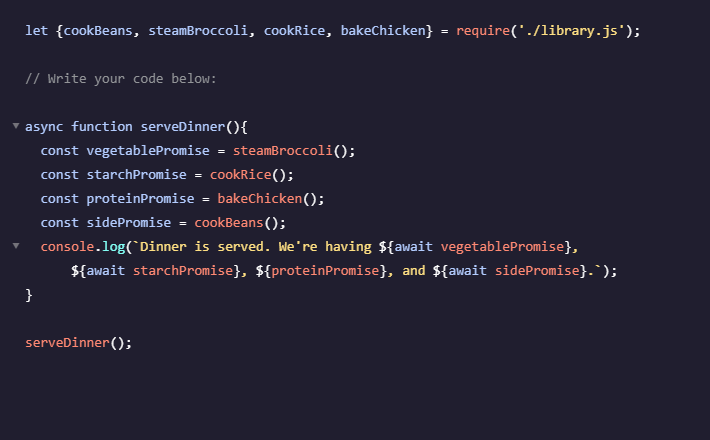
- This effectively creates concurrency, as multiple promises are assigned to variables but are waiting through await to be settled before used. This is all done within an asynchronous function, which allows for the execution of multiple promises at the same time.
- You can also use await before a Promise.all([]) if you want to concisely create an array of promises which need to be settled. When you go to access the variable it's assigned to, you can do so with myVar[index] to get a specific settled Promise object.
APIs and HTTP Requests
- Often, as a developer it's necessary to grab information (resources) from external places. That's what makes the internet so powerful.
- In order to get these resources from all over the internet, developers use APIs.
- An Application Programming Interface, or API, is a tool created by a browser (Firefox, Chrome, Safari, etc.) or a third-party, which gives developers the ability to get and interact with external data.
- An API is not a visual interface, it's a coding interface with rules and protocols for interacting with it.
- It's an interface, in the sense that it is a connection point where your website can connect to another website to exchange info.
- It's easy to understand if you remember it backwards: an API is an interface for programming applications.
- There are two types of APIs: 1. Native browser APIs
2. Third-party APIs - Native browser web APIs include the geolocation API, the battery API, the clipboard API, and many more.
- Third party APIs are created by other websites for accessing their data and functionality
- In order to use these third-party APIs, you need to make HTTP requests.
-
The third-party API will then send a response to this HTTP request. Here are some of the most common responses:
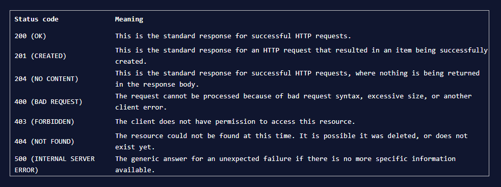
- If an API gets a successful reqest, it will send back data in the form of Javascript Object Notation (JSON)
- JSON mostly looks like Javascript objects, except always uses "strings" as key names
- Note that it's almost impossible to get data from other websites without using their APIs. Browsers often enforce cross-origin resource sharing restrictions, which means if the request doesn't originate from the same domain, protocol, and port as the endpoint, it will be denied. But even if you were to make HTTP requests using node.js and a server, you'd still face whatever security restrictions the website employs. such as rate limiting (limiting the number of requests that can be made), IP blocking, and requiring API keys. This is critical for sites that have confidential info, such as a bank.
RESTful APIs and JSON
- Representational State Transfer, also known as REST, is an architectural style for designing networked applications. It helps to facilitate communication between client and server.
- It's easiest to remember by breaking down the name: It's a represented state of the server (or the resource is manages) that is transferred to the client. In other words, snapshots of the resource are requested and returned through JSON to the client.
-
HTTP requests must include one of the the core CRUD methods:
1. POST (create)
2. GET (read)
3. PUT (update)
4. DELETE (delete). -
The request must have also include a path, or the portion of after a domain. Remember, a URL breaks down as follows:
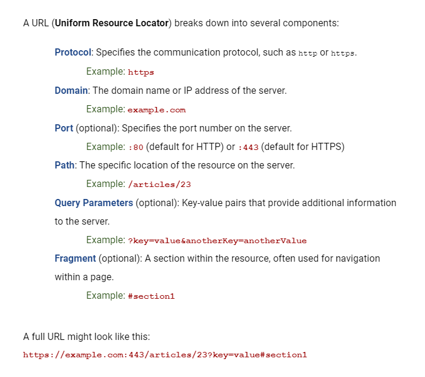
- In this case, /articles/23 would be the path
- The request usually also needs a header field, which can be an "Accepts" line. This specifies what type of content and format the client will allow to be returned.
- But there can be multiple header fields. All of the header fields just contain metadata describing the body of the request. A blank line usually follows to separate the headers from the body
- An optional body contains any relevant data needed along with the request or response.
-
Here's a great example of a request/response example with labeled sections:
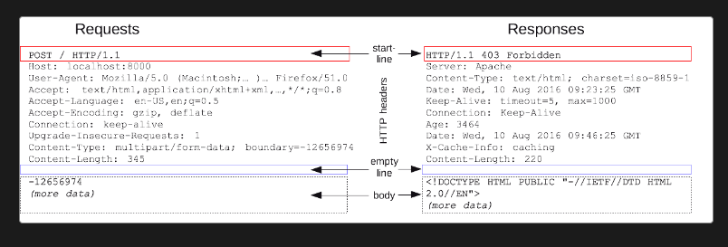
- The rules and protocols for acceptable requests are made by the API builder. They may require a header, or restrict methods at certain endpoints, etc. The builder controls how resources are accessed and modified.
- It's important to recognize that HTTP requests/responses are just a structured plain-text form. They aren't written in any specific language.
- The request/response lines and headers are written in plain text, but the body usually contains JSON, XML or other formats.
The Fetch API
-
fetch() is one of the primary ways of making HTTP requests. It achieves several tasks:
1. Creates a HTTP request with a given URL (and default method, headers, and body information)
2. Sends the HTTP request
3. Handles potential errors from the previous steps and returns a rejected promise
4. Receives the HTTP response
5. Parses the plain text response and converts it to an a response object
6. Returns a promise with a resolve value of the response object
-
Here's what a pseudo fetch() function might look like under the hood:
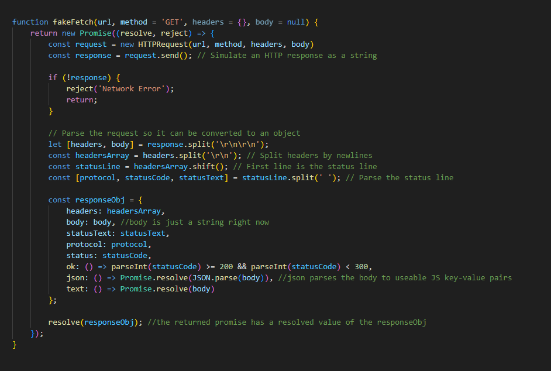
-
Note that if fetch() sends a rejected promise, this means that somehow the process of sending the HTTP request failed. It was not able to connect to the server. This has nothing to do
receiving a 400-level status code. A 400-level status code means that the HTTP request had successfully sent to the server! But the server denied or could not handle the request.
Be very careful about status codes! Log your const response = fetch(url) response variable and check the status code if you have issues! A 204 code could mean that you fed the server an endpoint that wasn't found, and whoever configured the API decided to use '204' as a catch-all for 'No content.' This is idiotic and tricky to debug.
-
Here's a concise way of using fetch with error handling, and retrieving response data converted to JSON:
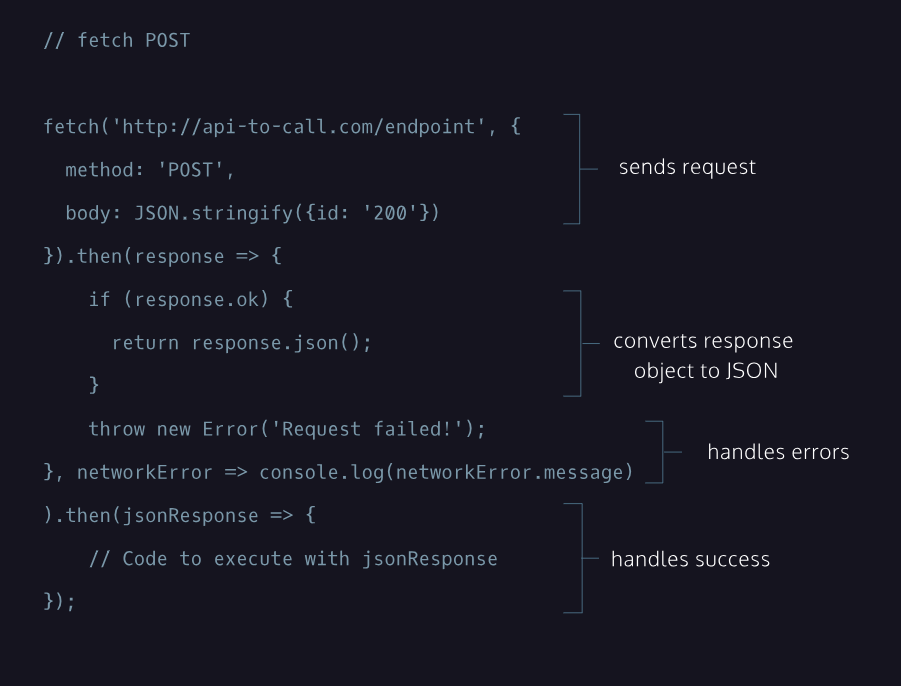
-
But async-await, along with try and catch blocks is the much cleaner ES8 solution:
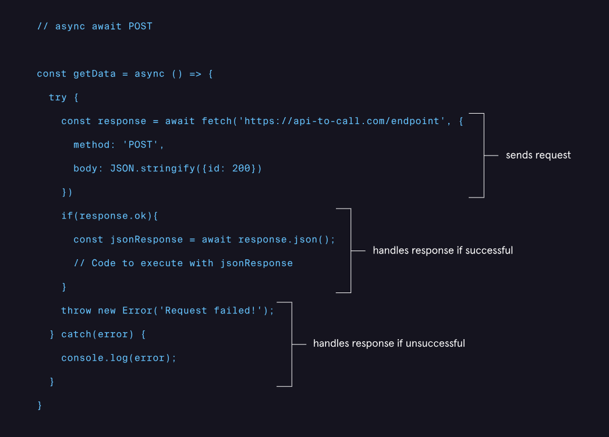
Chapter 14
JSX and React
-
Destructured assignment is a new ES6 way of extracting data from an arrays or objects. Here's array destructuring:
let street = ['Blueberry', 'Chestnut', 'Winterberry'];
let [street1, street2 , street3] = street;/* Order matters in array destructuring */
console.log(street1);
console.log(street2);
console.log(street3); -
Object destructuring is slightly different. Order is irrelevant, but key names must match assigned variable names exactly. If not, a colon operator needed:
let meal = {main: 'steak', side:'corn', vegetable:'broccoli', dessert:'shortcake'};
let {vegetable, side, dessert: snack} = meal; /* Variables need to match key names, or be assigned using : */
console.log(side);
console.log(vegetable);
console.log(snack);
-
You can also use destructuring assignment in functions as well. The same rules apply, where order matters for arrays and key names matter for objects:
function processOrder({name, address, weight}){
const price = weight*2;
console.log('Your package will be shipped to ' + name + ' at ' + address);console.log('Your total is $' + price + " dollars.")}
const packageLabel = {name: 'Bob Loblaw', address: 'Lawyer Street', weight: 12};
processOrder(packageLabel); - JSX is a syntax extension for Javascript. It's really not valid Javascript, so browsers don't know how to interpret it. It is a syntax that was written specifically for the React framework. It allows for HTML-like code to be written directly within Javascript.
- A JSX compiler will have to compile (translate) a Javascript file with JSX into regualar Javascript.
-
A JSX element looks exactly like an HTML element, except it's located in a Javascript file:
const myJsx = <h1>This is a JSX expression!</h1>; - Anywhere an expression usually goes, a JSX expression can replace it.
- If JSX spans multiple lines, make sure to use surrounding parentheses to avoid it being interpreted as Javascript
-
You can also nest JSX expressions, but be careful, only 1 outer JSX expression is valid at a time:
const myJsx = (
<h1>
<p>This is a valid JSX expression!</p>
</h1>
);
const myJsx = (
<h1>This is an outer JSX expression!</h1>
<p>But this is too, so it's invalid!</p>
); - To fix this issue, you could just simply wrap the invalid expression with a div.
-
Here's how you create a root and render a JSX element placed within that root:
const container = document.getElementById('container');
const root = createRoot(container);
root.render(<h1>New Header Added to the DOM</h1>) - In JSX, be careful to replace the HTML attribute "class" with "className." This is because JSX translates into Javascript, which the keyword class is already reserved
- "for" is another JSX attribute that needs to be changed. It will be changed to "htmlFor"
- Also make sure to never forget self closing tags in JSX, such as the self closing <br / >
-
You can employ Javascript within JSX tags, but it needs to be between curly braces:
const div1 = document.getElementById('div1');
const root = createRoot(div1);
root.render(<h1>5 + 2</h1>) /* this will render a heading with 5+2 */
root.render(<h1>{ 5 + 2 }</h1>) /* this will render a heading with 7 */ - Anything between tags of a JSX element will be interpreted as JSX, and JSX doesn't make calculations, but it does allow implementing JS through curly brace syntax.
-
You can also inject JS variables into curly braces:
const p = document.querySelector('article');
const root = createRoot(article);
const var = 'Butter';
root.render(<h1>{var}</h1>)
root.render(<h1>Peanut {var}</h1>) -
You can also make event listeners through JSX, such as an onClick attribute, or an onMouseOver attribute. This will work just like an event target callback
function addBigClass(event){
event.target.className = 'bigFont';/* notice the use of 'className' here */}
const someContainer = document.getElementById('someDiv');
const root = createRoot(someContainer);
const newLink = <a src='about:blank' target='blank' onClick={addBigClass}>Blank Tab</a>;
root.render(newLink); - Take note that JSX does not allow for if statements between its tags. It only accepts expressions, as expressions resolve to a singular value. Ternary operations are allowed.
-
You should plan to use || and && operators evaluations within JSX. Remember, these return actual values, such as:
const container = document.querySelector('header')
const root = createRoot(container);
const myNum = 1;
const heading = (
{ (myNum > 0) && <h4>Positive Number Was Found</h4>})
root.render(heading) -
Using the .map() method is also a fast efficient way of converting arrays to JSX arrays:
const sports = ['baseball', 'soccer', 'football', 'basketball']
const jsxSports = sports.map(string => <h4>{string}</h4>);/* make a new array of JSX elements */
const container = document.getElementById('container');
const root = createRoot(container);
root.render(jsxSports); /* React will automatically iterate over the JSX array */ -
It may be smart to add keys for an extra locator so React doesn't scramble of list items. Occasionally this happens... just add keys to fix this problem:
const mascots = ['Owl', 'Bear', 'Giant', 'Hornet']
const jsxMascots = mascots.map((string, i) => <li key={'mascot' + i}>{string}</li>)
const container = document.getElementById('container');
const root = createRoot(container);
root.render(<ul>{jsxMascots}</ul>) -
Under the hood, when JSX is compiled, every JSX element is a call to React.createElement(). In other words, every JSX element gets compiled to a
React element. Here's what this function call looks like (it returns a React element object):
const newEl = React.createElement(
"div",
null,/* null if there are no props */"this is a new React element" /* the inner text of the div */) -
Last, here are the summary of steps to which the virtual DOM is utilized in this whole process:
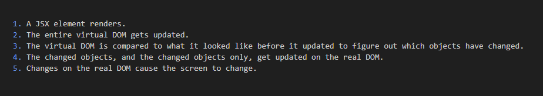
React, Part 1
- React is a framework that employs a virtual DOM to efficiently batch repaints and reflows to the real DOM. Normally, if you ever go to read or write to a webpage, it will trigger a reflow/repaint by the browser. For example, using methods like .appendChild(), or changing elements via style.color, may immediately cause a reflow/repaint of the webpage. If those two are back to back, modern web browsers may try to batch the reflow/repaint since they're in the same call stack, but it's not guaranteed. Instead, React keeps track of those pending changes, applies those changes either automatically or when you choose. It always guarantees the minimum number of reflows/repaints by batching updates.
- Another way to think about it is, React employs a virtual DOM to separate out state updates from rendering
- A React root's render() method only updates the DOM elements that have changed when a change in the virtual DOM is detected.
- React applications are made of components, or small chunks of reusable code that often are responsible for defining HTML content to be rendered
- In modern React applications, functions are used to define components. Use PascalCase to name your function components. The component should return some sort of JSX to be rendered.
- To use React, you'll have to use a bit of import and export
- App.js and index.js are separate files. The browser ultimately only looks at what is embedded within HTML script tags, which for standard React applications, is a single index.js bundled file. So you'll want to import any important modules (React components) from App.js into index.js.
-
In App.js (The top layer of a React application):
import React from 'react';
function NewComponent(){
return <h1>Hello Squirreld!</h1>;/* Parentheses are acceptable here if nesting JSX */}
export default NewComponent;
/* if there were multiple export modules, this would be the default if not specified by the corresponding import keyword */ -
In index.js:
import React from 'react';
import ReactDOM from 'react-dom/client'; /* Tells React how to interact with the DOM */
import NewComponent from './App'; /* brings in the React component you made */
ReactDOM.createRoot(document.querySelector('main')).render(<NewComponent />)
/* note the self closing tag syntax. Regular syntax could've been used for nested JSX or more components */
/* React treats lowercase tags as HTML elements, and uppercase as custom components */
-
Here's a recap of React components:
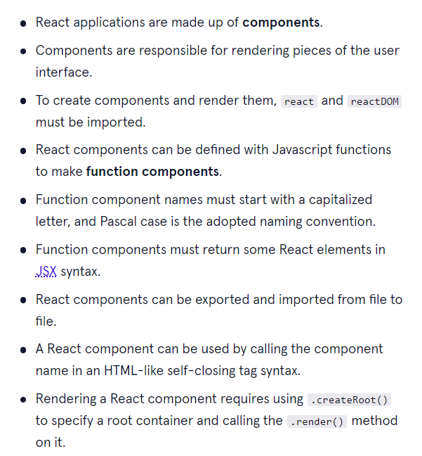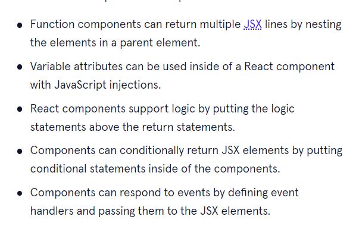
React, Part 2
- Props, short for "properties", are pieces of information passed between components, changing their behavior and appearance
-
Props look just like inputting HTML attributes. Any custom attribute name is accepted. String values will be in quotes, and all other Javascript values (numbers, expressions, etc.) will
need curly braces:
/* In MyProp.js */
import React from 'react'
function MyProp(propObj){
return (
<h2>{propObj['anotherKey']} {propObj['someObjKey']}</h2>)
}
export default MyProp;
/* In App.js */
import React from 'react';
import MyProp from './MyProp';
function App(){
return <MyProp someObjKey={350} anotherKey="Ill give u" />}
/* In index.js */
import React from 'react';
import { createRoot } from 'react-dom/client';
import App from './App';
const root = document.getElementById('root')
const virtDom = createRoot(root)
virtDom.render(<App />) - Props can only be passed down the component tree, starting at App.js, the top layer of React. From there they can go down to lower components.
- You can think of props like the "settings" of a component's tag in App.js. Those settings get passed down as an object to be parsed.
-
Here's how you would pass an event handler to a component:
/* App.js */
import MyButton from './MyButton';
function App() {
function handleHover(){alert('Now hovering! Hit enter, then click!');}
function handleClick(event){event.target.innerHTML = 'Clickity click!';
}/* Direct DOM manipulation with event.target is discouraged, use hooks instead */
return (
<div>
<MyButton onHover={handleHover} onClick={handleClick} /></div>
);
}
export default App;
/* MyButton.js */
function MyButton(props){/* props object has { onHover: handleHover, onClick: handleClick }
const style = {backgroundColor: 'blue',
color: 'white',
padding: '20px',
fontSize: '24px'
}
return ( /* notice the use of onMouseEnter below... onHover isn't valid JSX */<button style={style} onClick={props.onClick} onMouseEnter={props.onHover}>This is a button!
</button>;>
)
}
export default MyButton; - It's common to use something like function MyComponent({ onClick }), where a destructured assignment is used to define the props object. This allows you to just use onClick directly, instead of props.onClick
-
This is super important distinction to understand:
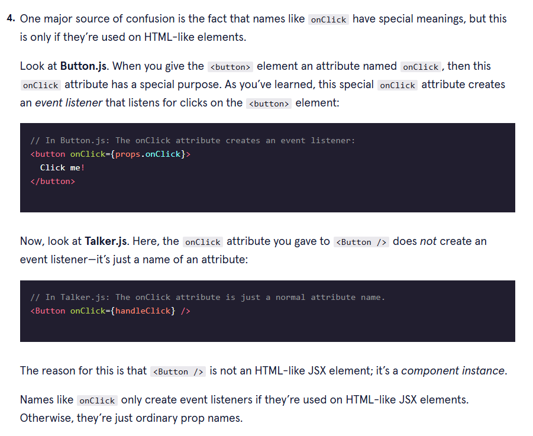
-
props.children is a useful way of creating containers at a top level, while still being able to customize the inner content:
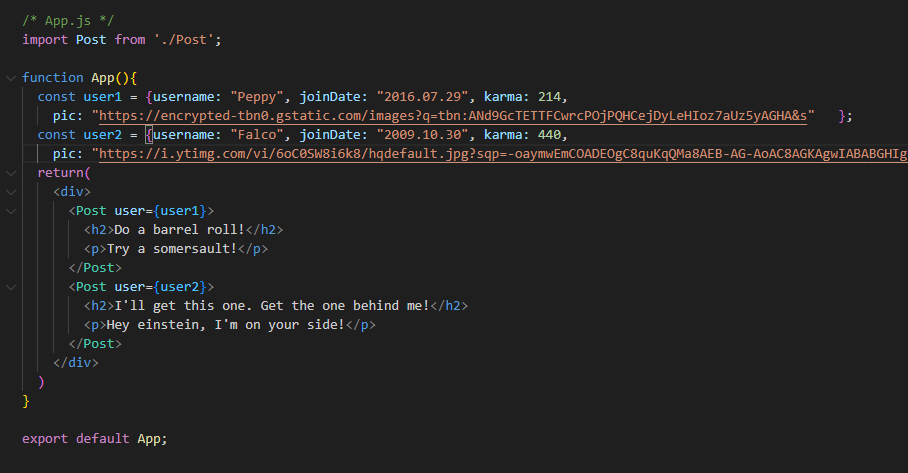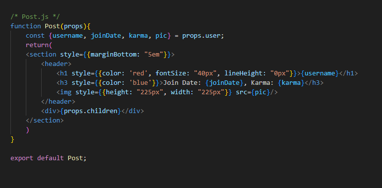
- A React Fragment is basically an unnamed tag, (<>...</>)
- A React Fragment is used to return multiple JSX elements without adding an extra outer node to the DOM
-
Alternatively, you could use .map() to do this:
return (someArrayOfObjects.map((obj)=> <LowerComponent obj={obj} />); -
React allows you to return arrays of JSX elements... alternatively you could directly return an array of JSX components:
return jsxArray; /* no need for curly braces */
The State Hook
- Hooks are React functions that manage component variables, setting and tracking them for changes in "state". If the state of a variable changes (e.g. a boolean that is 0 changes to 1), it will trigger a component re-rendering and a subsequent virtual DOM update.
- React will re-render the entire component, calling its entire function and body and returned JSX again, but useState() will keep track of the state across re-renders. It is given an initial value for the first mount, and any subsequent re-renders will use its new state.
- Here are some of the many built-in hooks: useState(), useEffect(), useContext(), useReducer(), useRef()
-
useState() allows React to 'use the state' of a particular component variable, much like a class variable with setter and getter methods:
import React, {useState} from 'react';
/* useState is not a default export, so it must be explicitly listed */
function LikeButton({booleanValue}){ /* destructuring props.booleanValue */
const [bool, setBool] = useState(booleanValue);
const handleChange = () => {setBool(Math.abs(bool-1));
}
return(
<div>
<button onClick={(handleChange)}>Like this post</button><div>{bool}</div>/* Renders the 1 or 0 of state variable of this component */</div>
)
}
export default LikeButton; - A super important distinction to understand is that React holds the the state values of a component internally
- When using let [x, setX] = useState(), x is a COPY of the actual internal state value, and that copy is only made once with useState(). This means you can increment x as much as you want (and you shouldn't, you should use const instead of let), but setX is the only way to actually way to update the internally located state value. Once setX is called, IF the internal state variable is actually changing, it will trigger a rerender of the component. Then, each line will be called again, including the line with useState().
-
Think of it like this:
let a = 1;
let b = a;
a += 1;
console.log(b); /* outputs 1, because b was assigned a COPY of a */
b = a;
console.log(b); /* outputs 2, because b was reassigned. */ - The line b = a; is essentially what set does, it changes the internally located state value.
-
So this can result in a somewhat confusing but important distinction to understand:
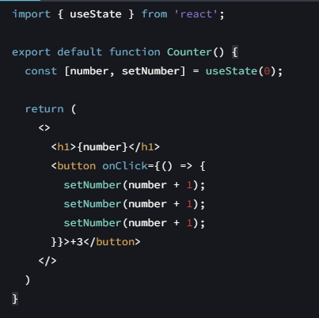
- You expect h1 to produce 3 when clicking the button, but it produces 1 instead. Here, the number variable is never actually reassigned... it holds a snapshot of the internal state variable for that render. When you call setNumber(number + 1) that's essentially like saying internalState = number + 1... but that doesn't change number! Besides, number is const when it the destructured assignment was created in the first place. Only when the component (the function) is called again will useState() actually assign through destructuring a new, updated number variable.
- Essentially, React waits until all the code in the component is run before processing state-updates.
- This allows you to make changes within a component, edit your next state value, change it, etc. But it will wait until all the processing is done to process the final state value. This is known as batching. It is what allows React to run faster and avoid too many re-renders.
- An updater function is a callback passed to setNumber()
-
The updater function accepts the queued (pending) state value as an argument:
function MyComponent(){
const [x, setX] = useState(0)
const handleClick = () => {setX(pendX => pendX + 1); /* pendX is initially x */setX(pendX => pendX + 1); /* pendX is a cumulative though */setX(pendX => pendX + 1); /* pendX will send only 3 to the internal state */}
return <button onClick={handleClick}>{x}</button>} - States can be more than just primitive types. They can also be objects.
-
Here's an example of using an array as a state for a very simple comment posting app:
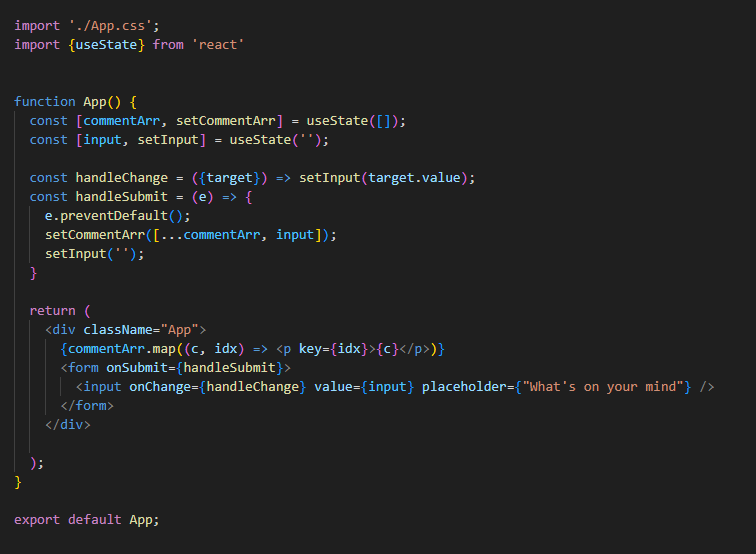
- Remember that in Javascript, you may dynamically assign keys within objects with []
-
This allows for some convenience when setting an object as state:
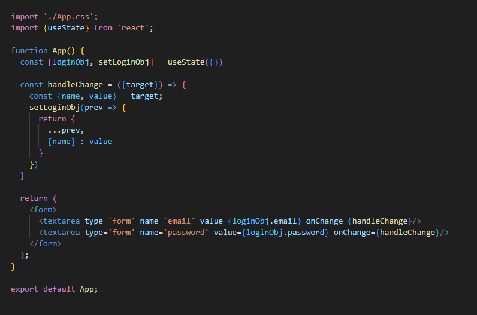
- Try not to make any one state too complicated though. If you've got a state variable that's an object of objects of objects, just separate it all out.
- Lifting state up means moving a state of a component into its parent's state variable. This allows its siblings to be affected. In order to change the parent's state variable, you'll need to pass the set function down as a callback to a prop of the original lower component. Then handle an onClick, onChange, etc. attribute of the lower component.
The Effect Hook
-
In React, your components should be pure functions. A pure function:
1. Reliably produces the same outcome when passed the same information.
2. Doesn't read or write variables that are declared outside of it (creating unpredictability). - Use props and local variables to create predictability.
- A pure component should simply create the same rendering of JSX every time.
- However, changes that need to happen not during rendering are referred to as side-effects. These usually take place in asynchronous event-handlers. However, if you just need to schedule a change to happen after a rendering, you can use useEffect().
- Be mindful with useEffect() though: "Strive to express your component's logic in the JSX you return. When you need to 'change things,' you'll usually want to do it in an event-handler. As a last resort, you can useEffect()"
- An Effect refers to the first argument of useEffect(). Remember, it's a callback argument, not the body (you're not defining useEffect(), it's not your function
-
In essence, a React component has two types of logic:
1. Rendering Code - Using props and state to calculate JSX in a pure way.
2. Event Handlers - Functions which do something, interact with external systems, make network requests, change state, manipulate the DOM, etc. -
Given that useEffect() typically connects to external systems, makes API calls, etc., and that react components are often re-rendered multiple times, you'll need to utilize
cleanup
functions
to avoid multiple connections being created. Cleanup functions are usually return bodies from useEffect() that remove event listeners.
If you addEventListener() each time the component re-renders, it'll cause a build up of event-listeners and bugs will appear. Also, notice how in the code below a dependencies []
are listed as a second argument to the useEffect() function. This will usually list variables that are included in the body of the useEffect() function. Without the
[] array, useEffect() will run with each component re-render. With the [] array, useEffect() will run only the first mount
and any time the included variables change. In this case, there are none, so useEffect() only runs
on mount:
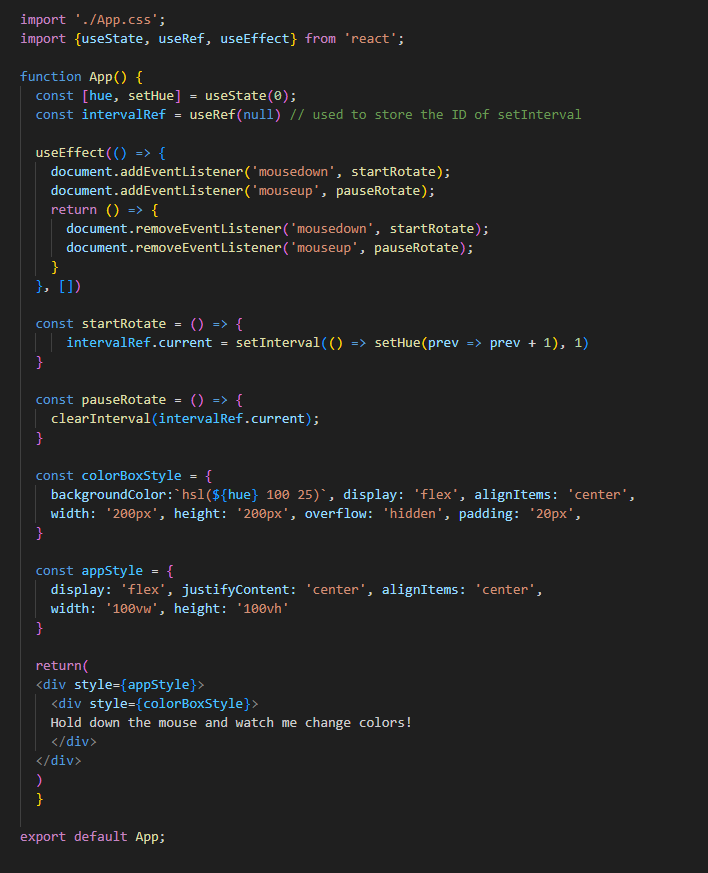
- Anytime you want to connect to an external API, you'll do your actual connecting in the useEffect() code body, since you want to grab this data once and not on each re-render. However the API allows you to get request the information, do that in useEffect() and use the returned promise response object data to set the state of one of your variables. But don't forget to add at least an empty dependency array! You never want to make unneccessary API calls from re-rendering.
-
The dependency array should list all the variables your useEffect() depends on! Hence the name, dependency array:
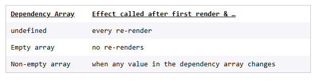
- In development, strict mode will always have a re-mount of components after the initial mount. This allows you to find bugs from re-mounting.
- Note that the useRef() hook is a way to store information as a variable that doesn't get reassigned with each re-render. Regular variables, on the other hand, do reset with each re-render. Also, unlike state, changing the ref does not trigger a re-render.
- Note that React keeps track of hooks in the order of the components definition. So always define them at the top!
- Also, never use hooks outside of a React component.
- Remember, useEffect() is a hook, so you'll want to employ this also at the top, and never within a loop, condition, or nested function.
-
For instance, it can be tempting to make code like this:
if (someStateVariable){
useEffect(() => {//do something here
});
} -
But don't do this. This nested useEffect() will result in different hooks to be called with different renders, and causes errors. Instead, refactor it:
useEffect(() => {
if (someStateVariable)
//do something
}, [someStateVariable]); /* Use a dependency array to keep track of any changes */ - You may useEffect() right under useState() if they're related and it helps to organize the code a bit more (e.g. if you have 3 states and 3 effects that correspond, group your effects next to the corresponding states rather than all together
- Remember that on every re-render, the ENTIRE function component runs. That includes the component's logic, variable declarations, the returned JSX, etc.
- Custom hooks are another way of creating use() type hooks but are especially useful for hiding away external API logic, or for hiding away unneccesary duplicate code
- You may use ref as an attribute to any JSX element. ref is a special attribute reserved for pointing to DOM elements. That's why it's not allowed as a prop name. It's unique in that under the hood, when React sees ref, if yourRef = useRef(null), (remember, useRef() returns a plain Javascript object {current: null}) it will set current to the DOM element, so now yourRef points to that DOM element.
- This is actually incredibly useful because now in your React components in your return statements you can useState() to reference variables in the code above, and with useRef() you can reference variables in the returned JSX code below.
- You'll mostly be using ref for things like ref.current.focus() or .scrollIntoView(), keeping track of sizes of elements, etc.
Common Pitfalls with Hooks
-
The following example changes the span element from 0 to 1 after a click, but fails to add any further clicks. Can you spot why?
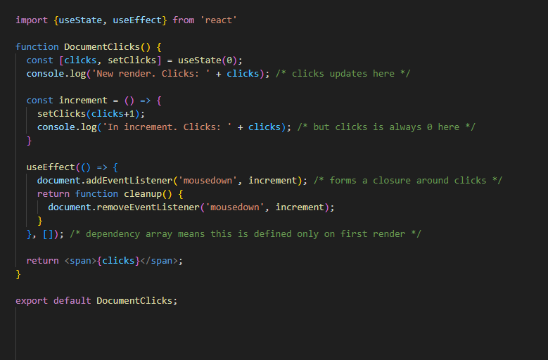
- The reason is the dependency array. useEffect() is defined only once on the first render, and increment locks in a click value of 0. Without re-rendering, increment forms a closure around the original click value.
- The solution can be just to get rid of the dependency array. But more often than not you don't want your effect being rendered over and over, so we need a different solution: updater functions.
-
The updater function is any callback passed to set(), with the pending state as the callback argument:
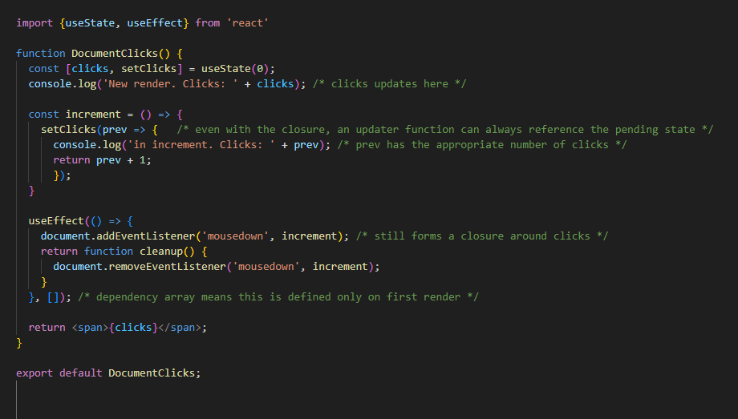
-
How is it that the setState() function can retain a reference to the pending state? Here's a hypothetical implementation of the useState() function under the hood:
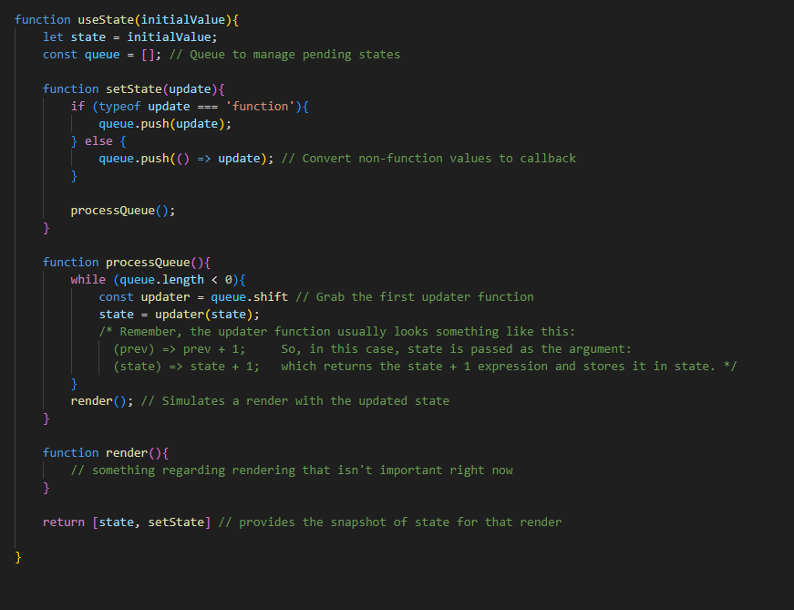
-
This demonstrates the power of callbacks! Callback arguments can become functions which become arguments again and so on, all in the process utilizing any variables within scope as
they're passed along!
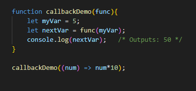
- Knowing this, you should now understand why you also need to return cleanup functions as callbacks. If you return a cleanup function, it will invoke it immediately, and it can't be properly stored. So for instance, if you return clearTimeout(timer), under the hood it'll immediately invoke the clear the timeout function to try to store its returned value, which there is none (undefined). But React expects a callback function to store for later instead, so when it is unmounting it'll call this function. This is why it would also be perfectly acceptable to utilize a function reference, like return myOwnClearTimeout
React Programming Patterns
-
Sometimes components can have too many reponsibilities. These can generally be grouped into two categories though:
1. Logic calculations (i.e. updating state, running effects, etc.)
2. Rendering JSX - Through props, lifting state up, and importing components, its 100% possible to refactor components into a container component, and a presentational component. This separation of concerns can make for better code organization and convenience.
-
Here're the steps for refactoring large components:
1. Move all JSX to a new (presentational, or 'stateless') component. Export it.
2. Import it in the old (container, or 'stateful') component. Return the component.
3. Pass the state values down as props.
4. Pass the setState values down as handlers.
- Many times, you'll have a lot of duplicate event handlers doing the same thing but for different HTML elements. Imagine a form with 30 inputs! That would be a ton of event handlers
to create and it would like messy and verbose. Instead, you can map react setters to a single setter-object by just grabbing their name:
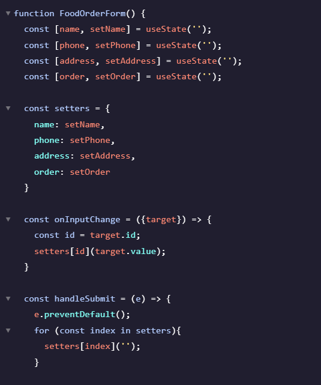
- This also makes it much easier to iterate over all the setters and reset a whole form all at once!
React Styles and Forms
- Remember, when setting the value for a JSX style attribute, it needs to be rendered as object, AND needs to take in an object literal, hence the need for two curly braces, style{{color: 'red'}}
- Values for each of these CSS properties should be in quotes as strings
- Numeric values not in strings are always interpreted as pixels in React
- Never use hyphens for any CSS properties. Since it is being rendered as a Javascript object, Javascript interprets hyphens as minus symbols. So instead, use camelCase.
- For that same reason, JSX will use className attribute, instead of class.
- You have multiple options for styling: inline, object variables, style sheets, and modules.
- Style sheets can cause naming conflicts if many components use different style sheets and CSS selectors collide. So, instead, use modules
- By importing a stylesheet as a module instead of a regular CSS file, the styles are only available for that component. This automatically creates unique classNames for each module.
- CSS modules are also possible in vanilla Javascript, but React comes with tools which automatically convert CSS modules to objects with unique keys for component use.
- Here's the import line for CSS modules in React:
import styles from './filename.module.css' - Notice that you import the styles object. This holds the classNames you selected. To access them, in your JSX attributes use className={styles.sidebar} where sidebar would be any CSS class selector.
- Note that CSS modules scope only classes, so if in your stylesheet you use something like, h1{ } it will still affect all h1's globally in the application.
- For React forms, you always want to update a state with every entered keystroke. You do this through an onChange JSX attribute
- onChange is assigned to an event handler, which does a setState(target.value), for which the value={state}
- React Components can be categorized as controlled components (those that stateless and controlled by another component), or uncontrolled components (stateful components that manage their own state)
- Most React elements are controlled